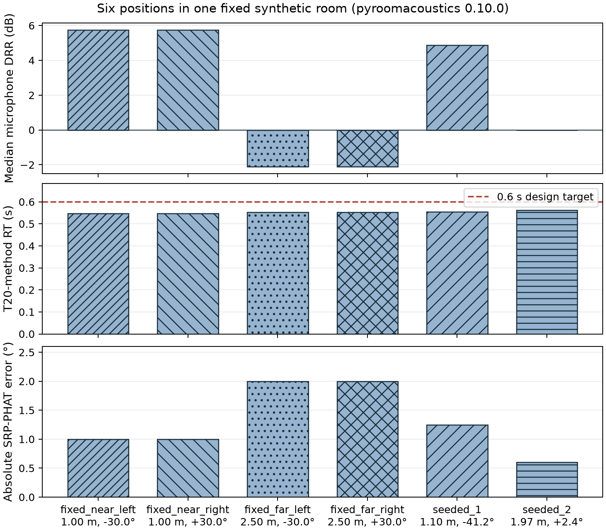
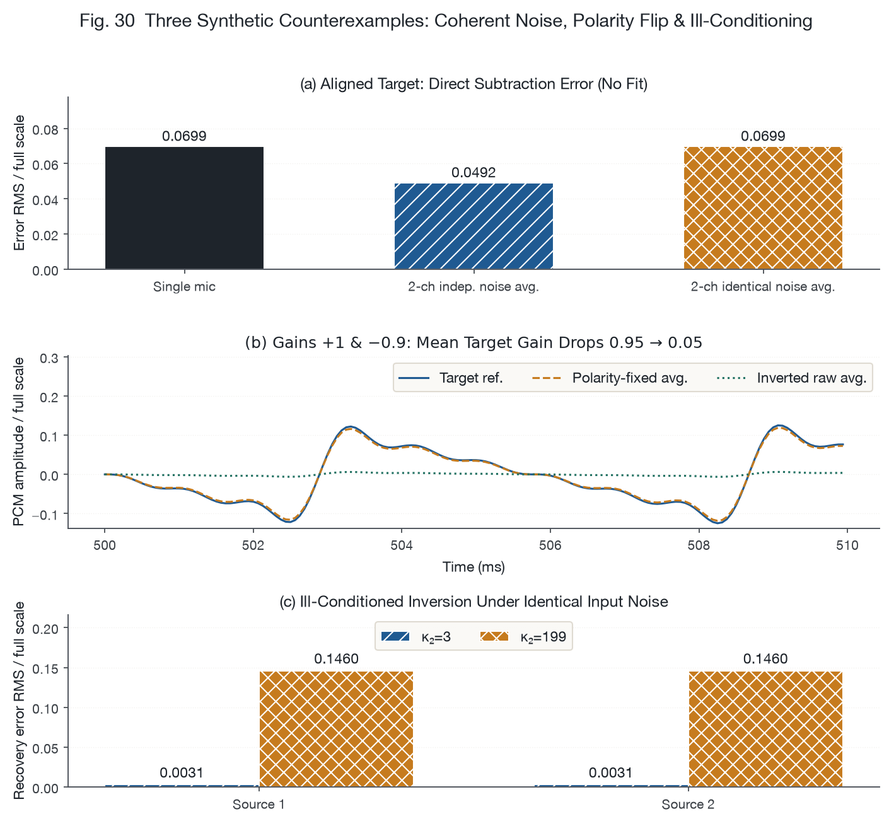
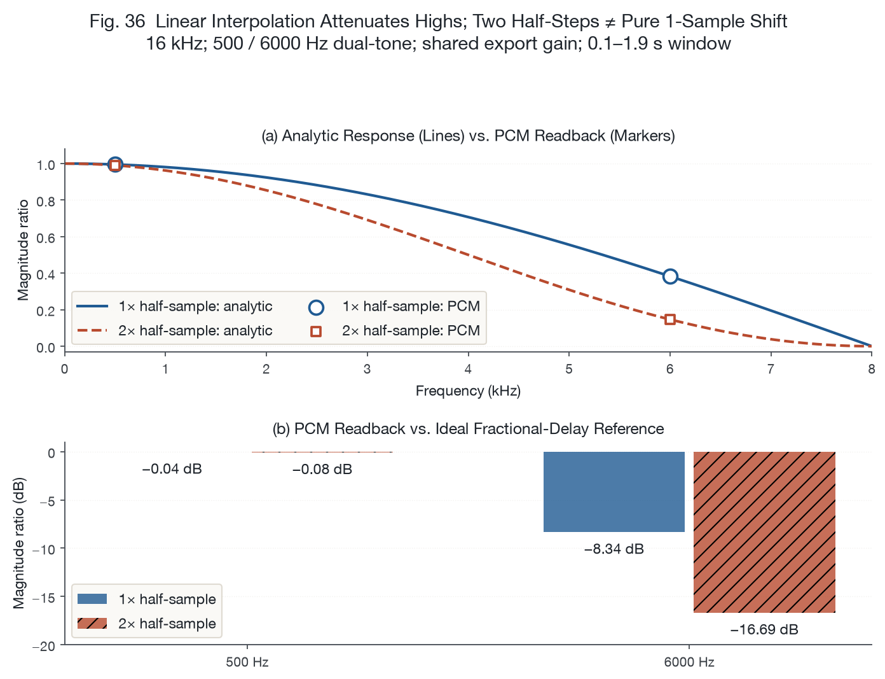
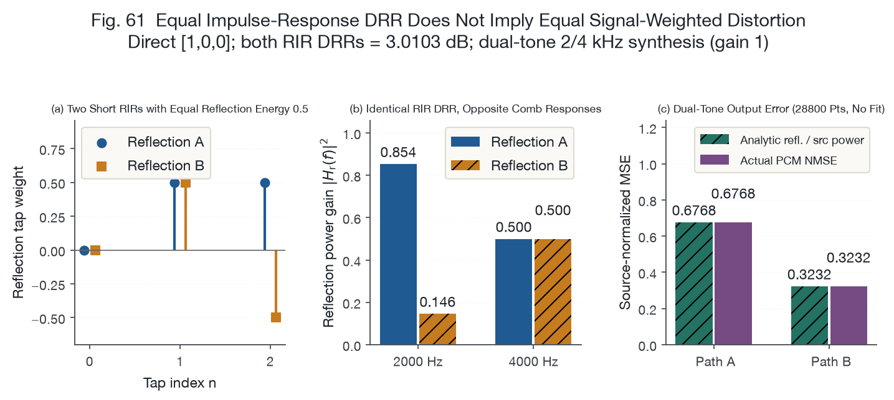

On this page
⚠️ This chapter is Chapter 17, i.e., Appendix B (the main text comprises 16 chapters, Chapters 0–15, of which Chapters 12–15 are four extended special topics, followed by Appendices A and B). It may be consulted independently; see the navigation links below for adjacent chapters.
Overview: 🏠 Course Overview | Previous: Chapter 16 · Appendix A: Symbols, Glossary & Math Lookup | Next: (None)
Chapter 17 · Appendix B: Learning Roadmap, Field Map, Debugging, Exercises, and Reproducibility
17.1 Graduate Study Roadmap
If you are preparing to undertake systematic research or engineering R&D in microphone array signal processing, we recommend first mastering the classical physical and statistical array models alongside Chapter 0: Mathematical Foundations, and then progressing methodically toward open-source baselines, public benchmarks, and real multi-channel hardware experiments.
- Foundational tutorials: Van Veen & Buckley, Beamforming: A Versatile Approach to Spatial Filtering (IEEE ASSP Magazine, 1988); Krim & Viberg, Two Decades of Array Signal Processing Research: The Parametric Approach (IEEE Signal Processing Magazine, 1996).
- Speech-focused surveys: Kumatani, McDonough & Raj, Microphone Array Processing for Distant Speech Recognition: From Close-Talking Microphones to Far-Field Sensors (IEEE Signal Processing Magazine 29(6):127–140, 2012); Gannot et al., A Consolidated Perspective on Multimicrophone Speech Enhancement and Source Separation (IEEE/ACM TASLP, 2017). Note that Kumatani et al. published a separate article sharing the same main title with the subtitle Towards Real-World Deployment—always verify the subtitle when retrieving citations.
- Seminal papers: Capon (1969), Griffiths & Jim's GSC (1982, An Alternative Approach to Linearly Constrained Adaptive Beamforming), Schmidt's MUSIC (1986), Roy & Kailath's ESPRIT (1989), Allen & Berkley's Image-Source Method (1979), Nakatani et al.'s WPE (2010), and Pal & Vaidyanathan's Nested Arrays (2010). When reading primary papers, cross-check their Fourier kernel signs, steering-vector conjugation, and normalization conventions against the corresponding chapters of this monograph.
- Acoustic echo cancellation: Hänsler & Schmidt, Acoustic Echo and Noise Control (Wiley, 2004); for recent industrial and academic advances, pair this text with the ICASSP AEC Challenge overview papers.
- Deep learning approaches: Chakrabarty & Habets, Multi-Speaker DOA Estimation Using Deep Convolutional Networks Trained With Noise Signals (IEEE JSTSP 13(1):8–21, 2019); Gu et al., Towards Unified All-Neural Beamforming for Time and Frequency Domain Speech Separation (IEEE/ACM TASLP, vol. 31, pp. 849–862, 2023, DOI
10.1109/TASLP.2022.3229261, a representative original research article proposing a unified time–frequency all-neural beamforming framework). -
Progressive experimental sequence: Introduce only one new physical or algorithmic factor at a time, retaining the deterministic output of each step as the control reference for the next.
- Run the NumPy-only pedagogical implementations under
codes/(including the mathematical foundation checksE00-01–E00-16in Chapter 0 §0.9), verifying hand-worked examples, tensor shapes, and degenerate boundary cases item by item. - Validate DSB, MVDR, MUSIC, and SRP-PHAT baselines using
pyroomacousticsinside an isolated virtual environment, logging room dimensions, sensor coordinates, and random seeds in full. - Generate all synthetic audio fixtures and tracking manifests per §17.7, execute the 12 plotting scripts under
scripts/to reproduce all 87 numbered figures at pinned parameters, and check every figure's validity conditions against the main text. - Select a public corpus and version-pinned reference baseline for your target task, auditing source-code licenses, model-checkpoint licenses, dataset terms, and scoring protocols separately.
- Measure processing latency, clock synchronization, and gain/phase calibration directly on multi-channel capture hardware; simulation metrics never substitute for physical hardware measurements.
- Run the NumPy-only pedagogical implementations under
After completing Chapters 2, 3, and 5, readers interested in source strength inversion and spatial sound-field diagnostics may proceed to Extended Topic I: Acoustic Imaging and Noise Source Diagnostics; after completing Chapters 2, 5, and 10, readers interested in bandwidth-constrained, clock-asynchronous multi-device processing may proceed to Extended Topic II: Distributed Microphone Collaborative Enhancement.
After completing Chapters 1, 2, and 5, readers focusing on spherical-harmonic Ambisonics capture, binaural signal matching, and wearable cross-modal denoising may proceed to Extended Topic III: Spatial Sound Field Capture, Parametric Coding, and Wearable Arrays; after completing Chapters 5, 8, 9, and 10, readers focusing on voiceprint-, near-field-, or audio–visual-guided extraction and overlapping multi-party diarization may proceed to Extended Topic IV: Conditional Target Extraction, Multi-Channel Diarization, and Far-Field Multimodal Front-Ends. These four special topics can be studied selectively on demand rather than as prerequisites for foundational entry.
17.2 Field Map: Textbooks, Conferences, Journals, and Challenges
This section surveys classic textbooks and monographs, public datasets and benchmarks, core open-source software libraries, core conferences, archival journals, public challenges, and key historical milestones across the field for rapid reference.
Textbooks, monographs, and authoritative surveys (textbooks and monographs ordered from accessible entry to advanced mathematical rigor, followed by two core surveys in the final row):
| Title and Authors | Scope and Reading Guidance |
|---|---|
| Benesty, Chen & Huang, Microphone Array Signal Processing (Springer, 2008) | Concise monograph systematically covering array signal models, DOA estimation, beamforming, and multi-channel speech enhancement |
| Loizou, Speech Enhancement: Theory and Practice (2nd ed., CRC Press, 2013) | Classic textbook on speech enhancement systematically covering spectral subtraction, statistical estimation, speech intelligibility, and objective evaluation metrics |
| Vary & Martin, Digital Speech Transmission: Enhancement, Coding and Error Concealment (Wiley, 2006) | Classic monograph on digital speech transmission and acoustic front-ends detailing noise PSD estimation, speech enhancement, and speech-coding co-design |
| Brandstein & Ward (eds.), Microphone Arrays: Signal Processing Techniques and Applications (Springer, 2001) | Classic edited volume with chapters authored by foundational researchers across each sub-topic |
| Tashev, Sound Capture and Processing: Practical Approaches (Wiley, 2009) | Engineering-oriented treatment of acoustic capture chains, transducer non-idealities, and real-time implementation trade-offs |
| Naylor & Gaubitch (eds.), Speech Dereverberation (Springer, 2010) | Foundational dereverberation monograph systematically covering room acoustic inverse filtering, MINT, spectral enhancement, and linear-prediction dereverberation; pairs with Chapter 7 |
| Doclo, Gannot, Moonen & Spriet, Acoustic Beamforming for Hearing Aid Applications (in Handbook on Array Processing and Sensor Networks, Wiley-IEEE Press, 2010, Ch. 9, pp. 269–302) | Classic chapter on hearing-aid and binaural Multichannel Wiener Filtering (MWF/SDW-MWF) and spatial cue preservation; pairs with §5.5.1 and Extended Topic III §14.7 |
| Johnson & Dudgeon, Array Signal Processing: Concepts and Techniques (Prentice Hall, 1993) | Classic general array processing textbook unifying radar, sonar, and acoustic array fundamentals |
| Van Trees, Optimum Array Processing: Part IV of Detection, Estimation, and Modulation Theory (Wiley, 2002) | Exhaustive statistical derivation of optimum array processing and performance bounds; ideal for deep mathematical reference |
| Vincent, Virtanen & Gannot (eds.), Audio Source Separation and Speech Enhancement (Wiley, 2018) | Comprehensive modern synthesis of audio source separation and multi-channel speech enhancement |
| Rafaely, Fundamentals of Spherical Array Processing (Springer, 1st ed. 2015, DOI 10.1007/978-3-662-45664-4; 2nd ed. online 2018 / copyright 2019, DOI 10.1007/978-3-319-99561-8) | Definitive text on spherical arrays and spherical-harmonic beamforming; pairs directly with §5.8 and Extended Topic III §14.2 |
| Zotter & Frank, Ambisonics: A Practical 3D Audio Theory for Recording, Studio Production, Sound Reinforcement, and Virtual Reality (Springer, 2019, Open Access, DOI 10.1007/978-3-030-17207-7) | Thorough coverage of ACN/SN3D encoding, $\max\text{-}r_E$ energy-vector loudspeaker decoding, 3D rotations, and binaural rendering; pairs with Extended Topic III |
| Core surveys: Park et al., A Review of Speaker Diarization: Recent Advances with Deep Learning (Computer Speech & Language 72:101317, 2022, DOI 10.1016/j.csl.2021.101317); Žmolíková et al., Neural Target Speech Extraction: An Overview (IEEE Signal Processing Magazine 40(3):8–29, 2023, DOI 10.1109/MSP.2023.3240008) | Authoritative journal surveys on speaker diarization (clustering, EEND, TS-VAD, DER scoring) and neural target speaker extraction (voiceprint, spatial, and audio–visual conditioning); pair with Chapter 8 §8.6 and Extended Topic IV |
Representative public datasets and benchmarks (always audit each subset's latest license agreement and official scoring scripts independently before experimental use):
| Dataset / Benchmark | Channels & Array Geometry | Data Source (Real / Simulated) | Core Tasks | Licensing & Evaluation Notes |
|---|---|---|---|---|
| WHAM! / WHAMR! | Mono / 2-channel | WSJ0 dry speech + real ambient noise (WHAMR! adds simulated reverberation) | Noisy and reverberant two-talker speech separation | Noise and mixing scripts mostly CC BY-NC 4.0; underlying WSJ0 requires separate LDC licensing |
| LibriMix | Mono / multi-channel extensions | LibriSpeech + WHAM! noise mixtures | General multi-speaker separation and enhancement | Open-source friendly (CC BY 4.0 / CC BY-NC 4.0); convenient for rapid baseline reproduction |
| DNS Challenge (ICASSP) | Primarily mono (some multi-channel tracks) | Multilingual real noise + simulated and real reverberation | Real-time speech enhancement and personalized denoising | Governed by edition-specific open/CC licenses; reports must separate non-blind dev and blind test sets |
| AEC Challenge (ICASSP) | Mono plus near-/far-end reference pairs | Large-scale crowdsourced real-device captures + synthetic echo | Full-duplex acoustic echo cancellation and double-talk fidelity | CC-licensed; typically evaluated with subjective MOS and non-intrusive AECMOS |
| AMI Meeting Corpus | 8-mic tabletop UCA + close-talking headset mics + AV | Real conference-room natural multi-party discussions | Far-field multi-channel ASR, separation, and speaker diarization | CC BY 4.0; canonical real-overlap meeting benchmark reporting sa-WER / cpWER / DER |
| AliMeeting / AISHELL-4 | 8-mic circular array (Mandarin meeting rooms) | Real multi-speaker Mandarin meeting recordings | Far-field multi-channel Mandarin ASR, overlap separation, and diarization | CC BY-SA 4.0 (baseline code mostly Apache-2.0; OpenSLR SLR111 / SLR119); high overlap ratios |
| CHiME-3–9 | 4–6 mic tablets, multiple 4-mic Kinects, heterogeneous devices, 360°/hearing-aid arrays | Real noisy, dinner-party, and meeting captures (with simulated subsets) | Far-field multi-channel ASR, DASR, multi-conversation transcription, and low-latency hearing aids | Edition-specific data agreements; CHiME-7/8/9 meeting recognition reports cpWER / tcpWER |
| NOTSOFAR-1 | Multi-device 7-mic tabletop arrays + close-talk | Real conference-room captures (CHiME-8 Task 2) | Distant multi-device ASR, separation, and diarization | CC BY 4.0; core benchmark for DiCoW and CHiME-8 DASR |
| LibriCSS | 7-mic circular tabletop array | Real conference-room re-recordings of LibriSpeech | Continuous Speech Separation (CSS, 0–40% overlap) | Official eval scripts MIT; audio re-recorded from CC BY 4.0 LibriSpeech (verify download bundle data terms separately); standard CSS benchmark in §8.6 and VarArray |
| SMS-WSJ | 6-mic circular array (8 kHz) | WSJ0/WSJ1 + simulated RIR and white noise | Multi-channel reverberant separation and enhancement | Simulation scripts MIT; WSJ0/WSJ1 require LDC license (evaluated by ArrayDPS in §17.3) |
| REVERB Challenge | 1 / 2 / 8-mic circular array | Measured meeting-room RIR simulations + real room captures | Single- / multi-channel dereverberation and far-field ASR | Observe licensing boundaries of underlying WSJCAM0 speech material |
| SPEAR / EasyCom | 6-mic AR glasses array + head pose & video | Real noisy restaurant conversations | Wearable head-mounted array speech enhancement and multimodal target extraction | CC BY-NC 4.0; original EasyCom multimodal corpus open-sourced by Meta |
| Clarity Challenge (CEC / CPC) | Multi-mic binaural hearing-aid arrays | Simulated domestic noise scenes + hearing-loss models | Hearing-aid enhancement and speech intelligibility prediction | Official challenge terms; aligns with Extended Topic III wearable arrays |
| LOCATA | 4/12/15/32-mic hearing-aid, tabletop, spherical, and robot arrays | Real reverberant indoor static and moving talker recordings | Multi-geometry DOA estimation and dynamic source tracking | ODC-By v1.0; accompanied by high-precision optical motion-capture ground truth |
| Spatial-LibriSpeech | 19-mic spherical array & FOA (650+ hours) | Realistic multi-room architectural acoustic rendering | Spatial DOA, $T_{60}$/DRR estimation, and spatial enhancement | Custom Apple dataset LICENSE in ml-spatial-librispeech (base LibriSpeech is CC BY 4.0); includes geometry and acoustic ground truth |
| SonicSet | Dynamic binaural and multi-mic array rendering | Moving-source simulation on Matterport3D / Habitat-sim | Moving-source 3D spatial audio understanding and separation | Open research terms via SonicSim; real architectural layouts |
| Ego4D / Project Aria | Multi-mic head-worn glasses array + synchronized egocentric video & IMU | Real everyday egocentric multimodal recordings | Egocentric source localization, target extraction, and interaction understanding | Requires signing official research data license agreements; includes natural head turns and own-voice speech |
| STARSS23 (DCASE SELD) | 4-mic tetrahedral FOA + 4-mic MIC + 360° video | Real indoor moving multi-event acoustic captures | Sound Event Localization and Detection (SELD) and distance estimation | MIT License (Zenodo 10.5281/zenodo.7880637); DCASE 2024 Task 3 retains this exact name |
| URGENT Challenge | Primarily mono (multi-rate, multi-degradation) | Multi-corpus real & synthetic degradations (reverb, clipping, bandwidth) | Universal Speech Enhancement (NeurIPS 2024 / Interspeech 2025 / ICASSP 2026) | Inherits component corpus licenses; included as a CHiME-10 track |
Core open-source software and libraries (verify current source licenses and pretrained model checkpoint terms independently before deployment):
| Library | License | Core Capabilities & Chapters | Release & Maintenance Notes |
|---|---|---|---|
pyroomacoustics |
MIT | Image-source / ray-tracing room simulation & baseline DOA/BF (§2.4, §4, Problem 16) | PyPI v0.10.1; repo frozen room assets pinned to v0.10.0 |
Acoular |
BSD-3-Clause | Acoustic imaging CSM, DAS, CLEAN-SC, DAMAS & calibration (Topic I) | PyPI v26.08 (calendar-versioned releases) |
doatools |
MIT | Array manifolds, difference coarrays (DA/SS), MUSIC/ESPRIT & sparse DOA (§3.3, §4) | Active Python library; verify input validation checks |
nara_wpe |
MIT | Reference NumPy/PyTorch multi-channel WPE blind dereverberation (§7) | Paderborn Univ. open-source reference |
pyfar |
MIT | Exponential sweeps, regularized deconvolution, filters & SOFA ecosystem (§2.4) | PyPI v0.8.1 |
pb_bss |
MIT | Statistical spatial mixture tools: cACGMM, MVDR, GEV, BAN (§5.9, §8.4) | Paderborn Univ. open-source toolkit |
ESPnet |
Apache-2.0 | End-to-end ASR & espnet_enh multi-channel separation/CSS/GSS (§8, §17.3) |
Hosts TF-GridNet & CHiME baselines; verify weights separately |
SpeechBrain |
Apache-2.0 | PyTorch toolkit for enhancement, separation, speaker & ASR (§8, §15) | Active community; verify pretrained model terms |
pyannote.audio |
MIT (code) | Neural speaker diarization, VAD & embedding pipelines (Topic IV, §17.3) | v4.1.0; HF weights mostly CC BY 4.0 or gated commercial |
libmysofa |
BSD-3-Clause | Lightweight C reader & interpolator for AES69 SOFA HRTFs (§1.2.3, Topic III) | v1.3.5; interpolation contract audited in repo |
| WebRTC AEC3 | BSD-3-Clause + patent grant | Production real-time AEC3, NS & AGC C++ pipeline (§6.7) | Active webrtc-audio-processing v1.x/v2.x; distinct from unmaintained py-webrtcvad (use Silero VAD MIT for modern lightweight VAD) |
Core conferences: ICASSP (flagship annual IEEE Signal Processing conference), Interspeech (flagship annual speech science conference), WASPAA (biennial IEEE Workshop on Applications of Signal Processing to Audio and Acoustics), IWAENC (International Workshop on Acoustic Signal Enhancement), HSCMA (Hands-free Speech Communications and Microphone Arrays), and DCASE Workshop (Detection and Classification of Acoustic Scenes and Events).
Archival journals: IEEE Transactions on Audio, Speech and Language Processing (now abbreviated TASLPRO, the core journal of our discipline), IEEE JSTSP (special issues in signal processing), JASA (Journal of the Acoustical Society of America), and Speech Communication.
Public benchmark challenges offer an indispensable window into real-world acoustic edge cases and standardized evaluation protocols.
The CHiME series has long anchored far-field, multi-speaker, multi-channel speech research. CHiME-9 featured two tracks: MCoRec (Multi-Modal Context-aware Recognition, multimodal context-aware multi-conversation transcription and conversation clustering) and ECHI (low-latency conversational hearing-aid enhancement); the CHiME-10 official task page announced three tracks—ECHI-2, URGENT, and SG-TSE (Smart-Glasses Target Speech Extraction)—with the official schedule page targeting February 4, 2027 for data/baseline release and August–September 2027 for submissions (verified November 11, 2026; check official announcements before entering).
DCASE 2026 closed submissions on June 15, 2026 and published results on July 1, 2026; Task 3 pivoted to Semantic Acoustic Imaging SELD, distinct from the 3D source distance estimation setup of DCASE 2024 Task 3 (verified October 5, 2026; see the DCASE 2026 homepage, submission rules, and results announcement).
Note specifically that DCASE 2026 Task 3 requires jointly predicting sound-event class labels and spatial power maps scored by official image-matching and correlation metrics. Although DAS, DAMAS, and CMF in Chapter 12 produce spatial power maps under a specified propagation model, they include neither an acoustic event classifier nor challenge output formatting; if used as a front-end comparison baseline, report physical imaging residuals separately from downstream semantic challenge scores rather than equating a spatial power map or Chapter 12 internal residual to official leaderboard metrics.
Other landmark evaluations include the REVERB Dereverberation Challenge, the ICASSP DNS and AEC Challenges, and the concluded SPEAR Challenge 2023. SPEAR utilized a 6-microphone head-worn array to study speech enhancement in Augmented Reality (AR) scenes (see Extended Topic III §14.5–§14.7 for head-worn BSM/MagLS and interaural coherence preservation); cite its specific edition year, mounting geometry, and evaluation rules rather than treating it as an ongoing general leaderboard.
Historical timeline (microphone array processing largely traces the migration of narrowband radar, sonar, and seismic array theory into wideband reverberant rooms, progressively fusing with statistical learning):
| Era | Representative Milestone |
|---|---|
| 1940s–1960s | Foundations of radar and sonar array processing (Bartlett conventional beam scanning) |
| 1969 | Capon introduces Minimum Variance Distortionless spectral estimation (originally for seismic arrays) |
| 1972 | Frost formulates time-domain linearly constrained adaptive beamforming |
| 1979–1982 | Allen & Berkley introduce the rectangular room Image-Source Method; Griffiths & Jim formulate the Generalized Sidelobe Canceller (GSC) |
| 1985 | Flanagan et al. build digitally steerable large-aperture auditorium/teleconferencing microphone arrays |
| 1986–1989 | MUSIC (1986) and ESPRIT (1989) exploit subspace orthogonality for DOA estimation; practical resolution remains bounded by aperture, SNR, snapshots, and manifold mismatch |
| 1990s | Elko systematizes differential microphone arrays, entering directional hearing aids and desktop speakerphones |
| 2001–2008 | Monographs by Brandstein & Ward and Benesty et al. consolidate speech microphone array signal processing as a unified discipline |
| 2010 | Nakatani et al. introduce WPE blind dereverberation; Pal & Vaidyanathan formulate Nested Arrays |
| 2011 | First CHiME Challenge establishes open benchmarks for distant speech recognition and enhancement |
| 2014 | Smart speakers such as Amazon Echo popularize consumer far-field multi-microphone voice interaction (array counts and geometries evolve across hardware generations) |
| 2015–2018 | CHiME-3/4/5 establish TF-mask-guided statistical beamforming and Guided Source Separation (GSS) as dominant baselines |
| 2019–2024 | Deep DOA/SELD tracking (e.g., Shimada et al. ICASSP 2021 ACCDOA joint activity-direction vectors) and all-neural multi-channel front-ends flourish; CHiME-7/8 adopt foundation ASR back-ends; DCASE 2024 Task 3 benchmarks source distance estimation on STARSS23 |
| 2025–2026 | CHiME-9 tackles multi-session MCoRec and low-latency hearing-aid ECHI, followed in July 2026 by CHiME-10's three tasks; DCASE 2026 Task 3 pivots to semantic acoustic imaging and publishes results |
When searching literature, note that the DCASE 2024 Task 3 specification retains the dataset name STARSS23—the corpus year suffix does not increment with the challenge edition year.
17.3 Snapshot of Research Frontiers (2024–)
This section connects the classical array models developed in earlier chapters to representative research directions from 2024 onward. For full auditability, every citation links to both the primary publication and a commit-pinned public code entry point; for these external neural systems, this monograph audits algorithmic assumptions and static API contracts only, without downloading model checkpoints or executing deep neural inference locally. Reported benchmark scores remain conditioned on each paper's exact corpus, implementation details, and scoring scripts, while challenge schedules follow official updates.
Direction 1: Pretrained Foundation Models as Distant ASR Back-Ends
Across the CHiME-7/8 (2023/2024) distant multi-speaker ASR evaluations, numerous participating teams paired large pretrained foundation back-ends such as Whisper and WavLM with classical GSS (§8.4) and analytical statistical beamforming in the front-end. These top-performing systems demonstrate effective synergy between pretrained back-ends and physics-based spatial front-ends under those evaluation conditions—not that distant speech processing has collapsed into a single monolithic model (see the CHiME-7/8 overview preprint, arXiv:2507.18161).
Direction 2: Array-Agnostic Systems
Cornell et al.'s CHiME-8 DASR task paper defines distant multi-speaker transcription across heterogeneous recording devices and provides official ESPnet and NeMo baselines. Rather than proposing a single channel-aggregation layer, §§5–6 of that report detail distinct diarization, multi-channel enhancement, and ASR configurations across the two baselines, whose cross-device generalization remains bounded by the task's training corpora, test hardware, and scoring protocol.
Direction 3: Target Speaker Extraction
Target Speaker Extraction (TSE) characterizes a designated speaker via pre-enrolled utterances, visual lip motion, or spatial directional prompts to isolate a single target voice stream out of multi-talker mixtures. Head-worn AR eyeglass arrays and passive acoustic microstructures attached to low-cost wired earphones further broaden spatial conditioning modalities; complete derivations of Feature-wise Linear Modulation (FiLM), dual-state target-silent energy-floor losses, and near-field spherical-wave distance bubbles appear in Extended Topic IV §15.1–§15.3.
Track model version evolution carefully when surveying papers: the original ICASSP 2022 TEA-PSE architecture and later challenge iteration TEA-PSE 3.0 differ in network topology and training recipes and must not be conflated. ICASSP 2024's CIENet (see also author preprint) feeds time–frequency representations of both enrollment speech and mixture speech into cross-attention interaction blocks to compute frame-varying target relevance weights, rather than pooling the entire enrollment clip into one static vector concatenated onto mixture spectra.
SonicSieve (CHI 2026; see project page and author preprint v3, verified 2026-09-22) illustrates a complementary physical-assist paradigm: explicitly eschewing device-specific smartphone cases, the design instead attaches a 3D-printed passive acoustic microstructure onto the inline microphone of a low-cost wired earphone, pairing it with the smartphone's built-in microphone as a dual-microphone system. Exploiting direction-dependent transfer-response variations induced by the microstructure across incident angles, a neural network extracts target speech from spectral cues rather than an enrolled voiceprint. That capability relies intrinsically on the companion physical microstructure plus matched training data and cannot be replicated via software alone on ordinary earphones and a smartphone. Likewise, personalized AEC (§6.5) incorporates speaker conditioning alongside a far-end loudspeaker reference branch and double-talk preservation objectives, requiring dedicated loss and interface design.
Direction 4: Generative Speech Enhancement and Sampling Acceleration
Generative enhancement frameworks epitomized by SGMSE+ (Richter et al., IEEE/ACM TASLP 2023; code & paper) and StoRM (Lemercier et al., IEEE/ACM TASLP 2023; code & paper) construct Stochastic Differential Equation (SDE) diffusion priors in the complex STFT domain; StoRM prepends a discriminative predictor for a coarse initial estimate refined by fewer diffusion steps. Flow Matching, distribution distillation, and consistency models continue to compress reverse-sampling latency.
Compared with discriminative masks, generative models often improve perceptual naturalness at low SNR yet carry a hallucination risk—synthesizing plausible phonetic details absent from the ground-truth utterance at severe noise levels—so evaluations must jointly audit perceptual quality, phonetic faithfulness, and downstream ASR Word Error Rate (WER). FlowSep (ICASSP 2025; paper and pinned commit), for example, applies Rectified Flow inside a VAE latent space for text-queried general audio separation; neither its single-channel latent synthesis mechanism nor its licensing posture (no explicit redistribution license at repo root, plus external pretrained checkpoints) extrapolates directly to phase-preserving multi-channel speech front-ends.
Extending generative priors to multi-channel arrays against §5.9's "TF mask + analytical beamformer" requires matching lookahead frames, reverse step budgets, and compute while checking inter-channel phase and spatial covariance consistency. Watch out for entry-point quirks during minimal code audits: in pinned SGMSE source, ScoreModel.enhance() dispatches samplers via self.sde.sampler_type under OUVE and normalizes directly by y.abs().max() without a zero-silence guard—passing an all-zero array divides by zero (static contract audit in Generative Implementation Research).
Direction 5: TF-GridNet and Complex Spectral Mapping Backbones
Whereas analytical blind separation in Chapter 8 relies on statistical independence and linear convolutive mixing, TF-GridNet (journal preprint) performs end-to-end complex spectral mapping directly in the STFT domain—stacking real and imaginary mixture components as input features to regress real and imaginary target components prior to inverse STFT. Each grid block alternates context modeling across an intra-frame full-band frequency module, a subband temporal module, and a cross-frame full-band self-attention module, giving rise to the name "Time–Frequency Grid."
Distinguish its two published editions carefully: Wang et al.'s ICASSP 2023 conference paper targeted anechoic monaural speaker separation, whereas the IEEE/ACM TASLP 2023 journal article expanded to noisy reverberant multi-channel joint separation and enhancement. Always pin the exact edition, input channel count, target source count, STFT window/hop, and corpus split; in pinned ESPnet TFGridNet source, verify mixture and reference variance-normalization flags so SI-SDRi numbers under different scaling conventions are never mixed.
Advancing the same dual-path complex spectral mapping paradigm, TF-Locoformer (Saijo et al., MERL, IWAENC 2024, arXiv:2408.03440) replaces the bidirectional LSTMs (BLSTMs) of TF-GridNet with multi-head self-attention and convolutional feed-forward blocks (SwiGLU / Conv-FFN), yielding an RNN-free time–frequency separation backbone that pairs strong multi-channel separation with improved parallelizability (static architecture and complex-spectrum interface audit in Separation Research Manual N15).
Direction 6: Journal Studies on Geometry-Agnostic Front-Ends
Kamo et al. (Computer Speech & Language 95:101820, 2026; journal page and author v2 full text) present a comprehensive geometry-agnostic multi-speaker distant ASR pipeline for real meeting recordings. Inspecting §2 and §§4.1–4.3.6 of v2 reveals that the system is far from a monolithic end-to-end separator: local diarization feeds preliminary GSS outputs into speaker embedding extraction, cross-block global clustering estimates total speaker count, and Target-Speaker VAD (TS-VAD; multi-channel spatial–spectral extension and exclusive-mask loop in §15.5) refines per-speaker activity boundaries—assigning activity detection, cardinality estimation, and identity attribution to modular cascaded stages.
During multi-channel enhancement, active channels are first pruned via maximum spatial covariance eigenvalue (EV) and early-to-late reverberation ratio ($C_{50}$), followed by cascaded WPE dereverberation, GSS separation, and Spatially Pre-processed MWF (SP-MWF), before SNR-based reference-channel selection and Blind Analytic Normalization (BAN) feed the ASR back-end (beamforming, WPE, and GSS derivations appear in Chapters 5, 7, and 8). Here "geometry-agnostic" means the pipeline requires no hardcoded 3D sensor coordinates—it still assumes sample-level clock synchronization across fused channels and does not automatically cure cross-device clock drift or severe acoustic domain shift.
Direction 7: CHiME-9 and Conditioned Foundation Back-Ends
The CHiME-9 task specification defines two tracks with sharply divergent modalities and latency budgets: MCoRec uses a central 360° panoramic audio–visual rig to transcribe multi-party chatter and cluster conversational groups, whereas ECHI targets causal wearable hearing-aid enhancement under a strict $\le 20\ \mathrm{ms}$ total algorithmic latency cap. Scores across the two tracks can never be merged into a single "CHiME-9 speech enhancement" table.
For transcribing a designated speaker directly out of overlapping speech, DiCoW (Polok et al., Computer Speech & Language 95:101841, 2026, DOI 10.1016/j.csl.2025.101841) injects frame-level diarization activity masks directly into Whisper encoder blocks to emit target-speaker text end-to-end, bypassing intermediate waveform separation (architectural trade-offs against cascaded GSS and SOT appear in §15.7).
When inspecting its public repositories, separate entry points and model revisions carefully: at the pinned demo commit, example.py invokes DiCoW v1 with Pyannote 3.1 whereas app.py invokes DiCoW v2 with Pyannote 3.1—sharing a commit SHA does not imply identical model weights—while the companion training/inference codebase is maintained separately (later main-branch DiariZen additions are not prerequisites of that pinned commit). Audit code and checkpoint licenses separately as well: source code is Apache-2.0, DiCoW v1 and DiCoW v2 weights are CC BY 4.0, later DiariZen weights are non-commercial CC BY-NC 4.0, and Pyannote 3.1 requires gated access approval. Fix diarization mask sources, chunking, and text normalizers during comparisons, and note that this offline transcription model cannot serve as a $20\ \mathrm{ms}$ ECHI hearing-aid waveform enhancer.
Direction 8: Diffusion Priors for Unsupervised Blind Source Separation
ArrayDPS (Xu et al., ICML 2025; PMLR 267 paper) investigates multi-channel blind source separation given neither array geometry / RIR priors nor paired clean separation targets. Unlike AuxIVA in Chapter 8 relying solely on inter-source statistical independence, ArrayDPS performs posterior sampling under a pretrained single-speaker diffusion prior while jointly estimating Relative RIRs at each reverse denoising step to evaluate mixture reconstruction likelihood gradients. This formulation still requires a known speaker count, synchronous multi-channel sampling, linear convolutive mixing, and acoustic domain coverage by the single-speaker prior.
Check the target definition in §2 of the paper carefully: ArrayDPS reconstructs each talker's reverberant source image at the reference microphone rather than anechoic dry speech, so evaluation references must be aligned to that exact reference sensor. A minimal reproduction against the pinned author commit aligns with the SMS-WSJ 2-speaker, 3-channel, $8\ \mathrm{kHz}$ recipe (num_speakers=2, n_channels=3, num_steps=400), comparing against IVA initialization under identical scoring while logging runtime, random seeds, and peak VRAM (documented at $>7\ \mathrm{GB}$ with 400 reverse steps embedding inner Relative-RIR optimization—targeted at offline research rather than low-latency streaming).
Also note a paper-versus-code parameter discrepancy: the paper text describes Forward Convolutive Projection (FCP) with a 512-point FFT and 64-sample hop, whereas public source and README defaults use a 512-sample window and 128-sample hop.
Auditing its evaluation script reveals two further subtleties: first, although the inner Sampler likelihood guidance never reads ground-truth sources, outer wrapper separate.py reads sources[:,0,:] at line 161 to compute SDR and uses that oracle metric at lines 180–186 for early stopping / restarts—an offline diagnostic mechanism unusable in blind deployment.
Second, §4.2 of the paper distinguishes Mean/SD across five independent sampling runs (averaging scalar scores, NOT averaging five waveforms), oracle Max selection using ground truth, and unsupervised Maximum-Likelihood (ML) trial selection using mixture reconstruction loss—cite the exact column protocol when quoting numbers (parameter hierarchy and contract audit in ArrayDPS Implementation Research).
Direction 9: Front-End Positioning in the Era of Full-Duplex Audio-LLMs and Spatial-LLMs
Audio language models differ in their input and output modalities. Moshi models user and system speech streams for full-duplex spoken dialogue. Qwen2-Audio accepts audio and text and generates text responses. BAT and Spatial-AST investigate binaural and spatial-sound understanding. The downstream task determines which sounds the front end should make clear and which spatial cues it should preserve.
- Playback reference, array cues, and sample timing: A hands-free microphone receives nearby speech together with loudspeaker echo. Their sum alone does not determine the two waveforms. Linear AEC uses the digital playback reference to estimate the loudspeaker-to-microphone path, then subtracts the predicted echo. See Chapter 6 for delay alignment and double-talk control. Wavefront curvature and multichannel activity can help distinguish a nearby primary speaker from a distant source in the same direction (§15.3–§15.4). Before combining recordings from different devices, correct the timing and sampling-rate offsets. Clipping discards peak information, while clock alignment corrects the sampling times. See Chapter 10, §10.2.
- Comparing front-end outputs for the downstream task: Mimi, EnCodec, and DAC encode audio as discrete tokens. Changes in spectrum or phase at the front end can change the encoded tokens. Use the same recordings to compare a baseline front end, a version with post-filtering, and a version that mixes some of the original observation back in. Measure word error rate for speech recognition, check whether full-duplex dialogue retains the start of an interruption, or check direction estimates for spatial tasks. See Chapter 10, §10.3.1 for observation adding. If the downstream interface also accepts spatial and activity information, pass DOA tracks and speaking intervals with the clock used for their timestamps.
Special Focus: Generalization Mismatch in Neural Front-Ends and Four Engineering Countermeasures
Neural front-ends tuned on a fixed laboratory array and simulated shoebox rooms frequently suffer steep performance drops when deployed onto unfamiliar array geometries, real reverberant enclosures, or new downstream consumers—a phenomenon collectively termed generalization mismatch. Below we decompose mismatch into three root sources and pair them with four engineering countermeasures aligned with array-agnostic and geometry-agnostic design.
Three primary sources of mismatch:
- Physical array mismatch: Sensor layout, channel count, inter-microphone gain/phase tolerances, or clock synchronization on the target device differ from training assumptions. Whenever an input layer implicitly memorizes a fixed channel ordering and baseline phase-difference distribution, changing enclosure diffraction or inter-element spacing breaks learned spatial filters—direct weight-regressing all-neural beamformers are especially vulnerable (see §5.9 Item 2).
- Acoustic environment mismatch: Room reverberation time, nonstationary noise structure, or talker distance exceeds the training distribution. Missed detections and false alarms in TF mask estimation directly contaminate target and interference spatial covariance matrices, eroding downstream MVDR spatial nulling.
- Task and domain mismatch: Synthetic training data omits sensor coordinate tolerances, baffle scattering, and transducer frequency-response ripples; test language or accent shifts; or a perceptual-quality-optimized speech enhancer is placed unadapted in front of an ASR decoder—with generative enhancers further risking low-SNR phonetic hallucination (Direction 4 above).
Four engineering countermeasures:
- Diverse physical data augmentation and domain fine-tuning: Randomize array topologies, room dimensions, $T_{60}$, and real noise recordings during training, followed by lightweight adaptation on small in-domain hardware captures. Augmentation aims to broaden exposure across cross-channel gain–phase manifolds rather than enumerating every conceivable device.
- Decoupling intermediate neural estimation from analytical spatial filtering: Task neural networks with estimating coordinate-insensitive intermediate quantities (such as TF masks, spatial covariances, or speaker activity posteriors) while handing spatial filtering back to mathematically transparent analytical solvers. MVDR enforces an exact unit distortionless constraint along a specified steering vector or RTF; GSS stabilizes spatial mixture clustering via diarization activity priors before extracting speech via beamforming (note that the end-to-end GSS pipeline itself is broader than a single linear constraint; see §5.9 Item 1 and §8.4). Cross-array generalization of the neural masks themselves must still be verified empirically.
- Symmetry-preserving architectures and training regularization: Apply random channel dropout, random channel permutation, and sensor coordinate jitter during training to simulate dead microphones, variable channel counts, and assembly tolerances, while enforcing strict channel permutation invariance or equivariance in network layers.
- In-field calibration and confidence-gated fallback: Calibrate bulk gain/phase offsets before deployment and monitor runtime SNR, mask entropy, or covariance condition numbers online—falling back smoothly to a robust analytical beamformer whenever neural confidence drops or compute budgets tighten. End-to-end net gains of hybrid switching must always be validated on target hardware.
Universal building blocks for array-agnostic front-ends: TAC and VarArray. Cross-device architectures typically apply shared-weight per-channel encoders followed by permutation-invariant cross-channel pooling or self-attention. The canonical building block is Transform–Average–Concatenate (TAC; Yi Luo et al., ICASSP 2020; original paper §2.1 Eqs. (1)–(4)): shared per-channel nonlinear projections are averaged arithmetically across all active channels and concatenated back onto each individual channel's representation. Because arithmetic averaging is permutation-invariant to channel order, concatenating it back makes per-channel outputs permute identically with input channels—achieving permutation equivariance.
Keep a sharp distinction in mind: "architecturally accepting an arbitrary number of channels" does NOT mean "numerical outputs remain invariant when microphones are added or duplicated"—merely duplicating Channel 1's signal verbatim shifts its weight in the cross-channel mean from $1/M$ to $2/(M+1)$, altering every channel's output (worked out by hand in E17-09 below).
VarArray (Takuya Yoshioka et al., ICASSP 2022) combines TAC cross-channel blocks, Conformer sequence modeling, and Inter-channel Phase Difference (IPD) features for geometry-agnostic continuous speech separation, validating speaker-attributed WER (sa-WER) on real AMI meetings and laying the architectural foundation for both the CHiME-8 DASR baselines and Kamo et al.'s meeting system above. When reproducing such composite pipelines, sketch the complete dataflow block diagram first—marking explicitly which stages depend on learned distributions, which aggregate across channels, and which enforce analytical physical constraints.
17.4 Common Pitfalls and Debugging Guide
During hardware bring-up and algorithm reproduction, engineers routinely encounter "the code runs without crashing, yet metrics or audio quality look wrong." Below we first list the twelve most common foundational and real-time hardware-streaming symptoms in "Observed Symptom → Priority Diagnostic Order," followed by an extended troubleshooting table covering dereverberation, separation, tracking, acoustic imaging, distributed arrays, spatial/wearable audio, and conditional target extraction / diarization.
-
MUSIC shows no peak or unstable peak locations → Check sample covariance rank and 2-norm condition number first. Forming an uncentered second-moment matrix from $L$ snapshots in $\mathbb{C}^M$ caps rank at $L$ (singular whenever $L\lt M$); subtracting the sample mean imposes a zero-sum constraint across the $L$ centered vectors, capping rank at $\min(M,L-1)$ (singular whenever $L\le M$). Even past this algebraic threshold, snapshot starvation causes severe subspace jitter.
Next verify configured source count $K$ against eigenvalue gap separation, and check whether strong specular wall reflections are coherent with the direct path. Remember that forward–backward or subarray spatial smoothing applies only to shift-invariant regular geometries (such as ULAs) at the cost of reduced effective aperture—it is not a universal cure for arbitrary reverberant arrays (§2.5, §4.6).
-
GCC-PHAT peak jumps between discrete sample lags → Typically caused by omitting fractional-sample peak refinement or using too coarse a correlation grid; another frequent culprit is a strong room reflection outvoting the direct path (Fig. 13). Figure 12 uses $16\times$ frequency-domain zero-padded cross-spectrum interpolation (rather than 3-point parabolic fitting); production systems may choose time-domain sinc/parabolic interpolation or frequency-domain weighted phase-slope fitting per compute budget (§4.2).
-
Target speech sounds distorted or muffled after beamforming → Audit target DOA, Relative Transfer Function (RTF), and inter-channel gain/phase calibration consistency first, then check whether target speech leaked into the noise covariance matrix (target signal cancellation).
Noise covariance may be accumulated over confirmed target-absent frames or weighted via TF masks, balancing sufficient snapshot support against target leakage. In reverberant rooms, check whether the distortionless constraint should switch from an anechoic plane-wave vector to an early-reflection RTF (§5.4, §5.9).
-
Superdirective beamformer outputs loud hiss → Inspect White Noise Gain (WNG), diffuse coherence matrix condition number, sensor gain/phase matching, and manifold tolerances. No universal "allowable mismatch dB constant" exists across all hardware; derive tolerances backward from your minimum WNG target, highest operating frequency, and measured beampatterns, applying diagonal loading or explicit WNG norm constraints at low frequencies (§5.3, §5.4).
-
High residual echo after AEC → Trace the signal chain sequentially: check whether the digital loopback reference missed OS audio effects or post-EQ, whether fixed bulk delay between playback and capture is aligned, whether the micro-speaker is clipping nonlinearly, and whether adaptive filter tap length covers the dominant early echo path. Bulk delay mismatch is common, though never assume without checking that every residual echo stems from delay offset.
If the linear path has converged yet audible harmonics or intermodulation correlated with far-end playback persist, tune the Non-Linear Residual Echo Suppression (RES/NLP) operating point or evaluate neural-assisted / learning-based AEC; see §6.7 for WebRTC AEC3 suppression architecture diagnostics.
-
Symmetric ghost peaks in SRP-PHAT → Separate three distinct physical causes before blaming sensor spacing:
- Geometric unidentifiability: ULAs exhibit intrinsic front–back / 3D cone-of-confusion TDOA symmetry, while planar arrays exhibit upper/lower hemisphere mirror symmetry; widening signal bandwidth cannot break geometrically identical TDOAs (§3.1).
- Spatial aliasing: Jointly check upper analysis frequency, sensor spacing, and scan range; exceeding $\lambda/2$ forfeits full-FOV alias-free guarantees, though whether a specific look angle spawns a visible grating lobe requires explicit calculation (§2.6 and Problem 2 below).
- Specular multipath: Strong wall reflections create virtual image-source peaks; evaluate alongside line-of-sight occlusion, room geometry, and mounting boundaries. Restricting angular scan sectors requires genuine mounting priors (e.g., flush wall mounting)—never crop scan grids merely to hide inconvenient peaks.
-
Multi-channel recordings drift out of alignment over time → Distinguish a constant initial trigger offset, sporadic driver buffer drops, and cross-crystal Sampling Rate Offset (SRO). Single-enclosure arrays should lock all ADCs/PDM mics onto a single hardware master clock; separate wireless devices lacking a shared clock require continuous online SRO estimation plus fractional-delay resampling. Remember that PDM and TDM are board-level serial bus protocols—they do not synchronize independent oscillators across separate devices (§10.2).
-
Great in simulation, poor on real hardware → Inject controlled non-idealities one at a time into simulation—sensor position tolerances, gain/phase mismatch, enclosure diffraction, transducer frequency-response ripple, SRO clock drift, and speaker nonlinearity—to isolate the dominant degradation factor.
Convert allowable phase error budgets (e.g., $\pi/12$ or $\pi/8$ at maximum frequency) into physical millimeter tolerances rather than applying one fixed millimeter rule across all bands and beamformers, and cross-validate calibrated hardware across tolerance envelopes and multiple range/azimuth test points.
-
Periodic amplitude tremor (e.g., ~6 dB periodic modulation) after inverse STFT → First verify that the analysis window, synthesis window, and hop size $H$ satisfy the Constant Overlap-Add (COLA) condition ($\sum_\ell w_{\mathrm{syn}}[n-\ell H]w_{\mathrm{ana}}[n-\ell H]=\text{const}$). A frequent mistake is applying a full Hann window on both analysis and synthesis at $50\%$ overlap (creating an effective $\sin^4$ window with roughly $6\ \mathrm{dB}$ periodic ripple), or using a non-periodic symmetric window that breaks seam alignment; switching to a square-root Hann analysis–synthesis pair or increasing overlap to $75\%$ restores flat reconstruction (see §0.2.4, §2.5).
-
MEMS differential / superdirective array loses low-frequency directivity completely → Inspect the enclosure assembly for acoustic gasket seal leaks around the MEMS microphone ports. Differential and low-frequency superdirective arrays depend critically on minute acoustic pressure phase differences between adjacent ports; if a dust mesh or rubber gasket leaks and causes internal-cavity acoustic short-circuit crosstalk, the low-frequency inter-mic phase difference collapses immediately, erasing beam nulls while severely amplifying low-frequency self-noise (see §5.3, §10.2).
-
PDM / TDM digital array outputs full-scale screech, DC saturation, or channel swaps → Audit bus timing and DC offsets sequentially: (1) inverted PDM
L/Rselect strapping or mismatched rising/falling clock edges interleave and corrupt the two bitstreams; (2) a 1-bit shift in TDM frame sync (FSYNC) polarity, word length (16/24/32 bit), or slot alignment corrupts sign bits into full-scale pops; (3) omitting a front-end DC-blocking high-pass filter causes low-frequency offset drift and fixed-point saturation (see §10.2). -
Real-time AEC periodically unlocks in a static room and emits brief echo bursts → Do not suspect an acoustic path change alone; first check for real-time audio driver DMA buffer underruns/overruns (
xrun) or scheduling thread frame drops. Every dropped capture or playback buffer instantaneously shifts the relative delay between loopback reference and microphone input by one block (e.g., $8$–$16\ \mathrm{ms}$), which appears to the adaptive filter as a sudden room-path jump; inspectdeadline_misses, ring-buffer watermarks, and interrupt priorities before tuning delay estimators (see §6.4, §6.7, §10.1–§10.2).
For dereverberation, multi-source separation, dynamic tracking, and the four extended special topics in the second half of this monograph, consult the extended diagnostic table below column by column:
| Module & Task | Typical Failure Symptom | Priority Checks & Physical Boundaries | Reference Sections |
|---|---|---|---|
| WPE Blind Dereverberation | Direct speech sounds dull/clipped on consonants, or noise floor surges during pauses | Check whether prediction delay $\Delta$ is too small (e.g., $\Delta=1$ predicts away early reflections needed for intelligibility; Fig. 70 & Problem 11); check variance floor $\varepsilon$ on silence frames against ill-conditioned inversion; match frame size, taps $K$, and iterations to $T_{60}$ | §7.2, §7.3 |
| Speech Separation (GSS / CSS / IVA) | Clean intra-chunk separation, but speaker swaps, polarity flips, or level jumps at chunk seams | In Continuous Speech Separation (CSS), verify inter-chunk permutation alignment, overlap polarity sign, and gain scaling sequentially (correct permutation alone does not fix sign or gain; Fig. 71); check inter-frequency alignment in AuxIVA and target leakage in mask beamforming | §8.3–§8.6 |
| Multi-Source Tracking | Tracks lag walking talkers, brief pauses cause track fragmentation/ID switches, or particle collapse | Separate overly tight gating thresholds from overly small process noise; check whether track lifecycle conflates "measurement-arrival age" with "physical state-clock age" (Fig. 72); inspect particle $N_{\mathrm{eff}}$ resampling rate and bounded-sector boundary reflections | §9.2–§9.4 |
| Acoustic Imaging (DAS / DAMAS / CMF) | Fat mainlobes, dense sidelobe ghosts, or deconvolved source sum mismatching SPL | Plot array Point Spread Function (PSF) over the active band/grid first; check whether coherent reflections violate uncorrelated-source CSM premises; check whether diagonal removal breaks PSD structure, and distinguish peak vs. integrated zone power (Figs. 62–64, 75) | §12.3–§12.10 |
| Distributed Array Enhancement | Multi-node fusion SNR worse than single-node local beam, or progressive comb filtering | Check inter-node SRO and block-start offsets destroying cross-device coherence first; check whether packet-drop gap windows inject zeros or stale statistics into covariances; in DANSE, verify cached receive weights reassemble immediately upon broadcast updates (Figs. 65–67) | §13.5–§13.15 |
| Spatial Capture & Wearable Arrays (FOA / BSM / Cross-Modal / Hear-Through) | High-frequency omnidirectional sphere notches, hollow eyeglass treble, in-head background localization, outdoor wind roar, or metallic hear-through coloration | Check open-sphere $\kappa R=\pi$ nulls and spatial aliasing; switch to BSM-MagLS at high frequencies; tune BMVDR reference mix $\beta$ to restore IC; detect wind via low-frequency coherence drop and fuse occluded inner mic via MVDR (avoid unregularized high-frequency bone-mic inverse EQ); check the relative delay and gain/phase of electronic and direct sound; in the equal-gain, initially in-phase two-path model, $100\,\mu\mathrm{s}$ places the first cancellation zero at or above $5\,\mathrm{kHz}$ | §14.2–§14.10 |
| Conditional Target Extraction & Diarization (TSE / Distance Bubble / TS-VAD / AV) | Bystander bleed during target silence, muffled solo fricatives, small-aperture bubble roar, meeting DER stuck $>25\%$, or AV front-end swallowing utterance-initial consonants | Enable Eq. (15-6) dual-state floor loss with target-silent training clips; enable Eq. (15-8) zero-overlap bypass; check Fresnel $r_F=2D^2/\lambda$ against $\mathrm{WNG}\propto d^4$ collapse; upgrade single-label clustering to multi-label spatial–spectral TS-VAD + Eq. (15-25) exclusive GSS masks; calibrate camera lag $\Delta t_{\mathrm{av}}$ and lip-occlusion fallback | §15.2–§15.6 |
17.5 Core Formula Quick-Reference Card
The table below consolidates core equations and validity boundaries across all main chapters and four extended special topics in chapter order for rapid review; consult each linked chapter for complete regularity assumptions.
| Formula | Physical Meaning & Key Validity Boundaries | Section |
|---|---|---|
| $\mathbf P_{\mathcal R(\mathbf A)}=\mathbf A(\mathbf A^H\mathbf A)^{-1}\mathbf A^H$; $\dfrac{\partial(\vec w^H\mathbf R\vec w)}{\partial\vec w^*}=\mathbf R\vec w$ | Full-column-rank orthogonal subspace projector (idempotent and Hermitian) and Wirtinger conjugate gradient of a Hermitian quadratic form—the algebraic bedrock of subspace DOA and constrained optimum beamforming | §0.3, §0.5 |
| $10\log_{10}M$ | White Noise Gain (WNG, in dB) of an $M$-element DSB under unit-modulus steering, distortionless normalization, and i.i.d. equal-power white sensor noise; invalid under unequal channel gains | §1, §5.2 |
| $r_F=2D^2/\lambda$ | Fraunhofer spherical-wave quadratic phase curvature gauge (not a hard binary cutoff); plane-wave steering additionally requires checking $r\gg D$, inter-sensor $1/r$ amplitude spread, and phase error budgets | §2.2, §15.3 |
| $T_{60} = 0.161V/A$ | Sabine empirical reverberation-time formula (weakly absorbing, approximately diffuse room) | §2.4 |
| $d_c = 0.057\sqrt{QV/T_{60}}$ | Critical distance where direct and reverberant energies match; $Q$ is source directivity factor ($Q=1$ for omnidirectional source) | §2.4 |
| $\vec{x} = \vec{a}(\theta)s + \vec{v}$ | Narrowband far-field single-source array observation model | §2.3 |
| $\hat{\mathbf{R}}_{xx} = \frac{1}{L}\sum_{\ell=1}^L \vec{x}_\ell\vec{x}_\ell^H$ | Uncentered sample spatial second-moment matrix (commonly termed sample spatial covariance) | §2.5 |
| $d \lt \lambda/2$ | Sufficient condition on a ULA to eliminate endfire periodic grating-lobe ambiguity across the entire closed FOV $[-90^\circ,+90^\circ]$; at $d=\lambda/2$, $\pm 90^\circ$ endfire phases alias identically (restricted scan sectors analyzed separately) | §2.6 |
| HPBW, DI, WNG: $\mathrm{HPBW}\approx\dfrac{0.886\lambda}{Md\cos\theta_0}$; $\mathrm{DI}=10\log_{10}\dfrac{\lvert B(\Omega_0)\rvert^2}{\frac{1}{4\pi}\int_{4\pi}\lvert B(\Omega)\rvert^2\mathrm{d}\Omega}$; $\mathrm{WNG}=\dfrac{\lvert\vec w^H\vec a(\theta_0)\rvert^2}{\|\vec w\|_2^2}$ | Half-power beamwidth (narrow-beam ULA approximation away from endfire), full-sphere spatially averaged directivity index, and white noise gain, Eqs. (2-11)–(2-13) | §2.6 |
| $\mathrm{CRLB}(\theta)=\dfrac{6}{L_{\mathrm{snap}}\,\mathrm{SNR}\,M(M^2-1)\eta^2(\theta)}$, $\eta(\theta)=\dfrac{2\pi d}{\lambda}\cos\theta$ |
Local variance lower bound for any unbiased ULA azimuth estimator under single narrowband far-field deterministic unknown source and circular complex white Gaussian noise ($L_{\mathrm{snap}}$ independent snapshots; example in Eq. (2-14); does not guard against global aliasing) | §2.6 |
| $R_{ij}=\sum_{k=1}^K P_k e^{\mathrm{j}\kappa(\vec r_i-\vec r_j)^\top\vec u_k}+\sigma_v^2\delta_{ij}$; $\hat r[\ell]=\dfrac{1}{N_\ell}\sum_{p_i-p_j=\ell}\hat R_{ij}$ | Sparse-array difference coarray (signed lag $\ell=p_i-p_j$, redundancy $N_\ell$) second-order statistical virtual aperture extension (spatial smoothing in Eq. (3-16)); requires uncorrelated sources, quasi-stationarity, and matched channel gain/phase | §3.3, E03-07 |
| $\hat\theta = \arcsin(c\hat\tau_{12}/d)$ | Far-field two-mic TDOA-to-front-hemisphere principal azimuth mapping; $\tau_{12}=t_1-t_2$ estimated from $X_1X_2^*$ peak, requiring non-collinear baselines to resolve front–back ambiguity | §2.1, §4.2 |
| $R(\tau)$: $\int\Phi G_{12}e^{\mathrm{j}2\pi f\tau}\mathrm{d}f$ | Generalized Cross-Correlation (GCC) delay function ($G_{12}=X_1 X_2^*$); $\Phi=1/\lvert G_{12}\rvert$ gives PHAT weighting | §4.2 |
| $\hat{\vec p}=\arg\max_{\vec r}\sum R^{\mathrm{PHAT}}$ | Steered Response Power (SRP-PHAT) multi-pair spatial grid voting localization | §4.3 |
| $P_C(\theta)=1/\bigl(\vec{a}^H(\theta)\hat{\mathbf{R}}_{xx}^{-1}\vec{a}(\theta)\bigr)$ | Capon minimum-variance spatial spectrum | §4.5 |
| $P_{\mathrm{MU}}(\theta)=\|\mathbf E_n^H\vec a\|_2^{-2}$ | MUSIC noise-subspace orthogonality pseudospectrum | §4.6 |
| $\vec{w}_{\mathrm{DSB}} = \vec{a}/M$ | Delay-and-sum weights under unit-modulus steering ($\vec a^H\vec a=M$); general distortionless matched-filter weight is $\vec a/(\vec a^H\vec a)$ | §5.2 |
| $\lvert B(\theta)\rvert=\lvert\sin(M\psi/2)/[M\sin(\psi/2)]\rvert$ | Normalized equal-weight ULA array factor, residual spatial phase $\psi=2\pi d(\sin\theta-\sin\theta_0)/\lambda$ | §5.2 |
| $\vec w_{\mathrm{SD}}$: $\mathbf{\Gamma}^{-1}\vec a/q_{\Gamma}$ | Superdirective weights ($q_{\Gamma}=\vec a^H\mathbf{\Gamma}^{-1}\vec a$) minimizing isotropic diffuse noise power under distortionless constraint | §5.3 |
| $\vec w_{\mathrm{MVDR}}=\mathbf R_{nn}^{-1}\vec a/q$ ($q=\vec a^H\mathbf R_{nn}^{-1}\vec a$) | Minimum Variance Distortionless Response (MVDR) beamformer weights | §5.4 |
| LCMV weights, Eq. (5-11) | Linearly Constrained Minimum Variance solution; full matrix form and conjugation convention expanded below | §5.5 |
| SDW-MWF weights, Eq. (5-13) | Speech-Distortion-Weighted Multichannel Wiener Filter; full matrix form expanded below | Chapter 5 §5.5.1 |
| $e=d-y$ | Generalized Sidelobe Canceller (GSC) subtracting blocking adaptive branch $y$ from fixed target branch $d$; matches LCMV under ideal orthogonal blocking, sufficient DOFs, and convergence | §5.6 |
| $\hat{\vec w}[n+1]=\hat{\vec w}[n]+\mu\dfrac{e[n]\vec x[n]}{\|\vec x[n]\|_2^2+\varepsilon}$ | NLMS adaptive echo cancellation update (Eq. (6-3), $e[n]=d[n]-\hat{\vec w}^\top[n]\vec x[n]$); ideal noiseless one-step contraction requires $0\lt \mu\lt 2$, with low-energy frames safeguarded by $\varepsilon>0$ or update freezing | §6.1 |
| $\mathrm{ERLE}=10\log_{10}(E_y/E_e)$ | Echo Return Loss Enhancement over far-end single-talk window $\mathcal W$; $E_y=\sum_{n\in\mathcal W}\lvert y[n]\rvert^2$ is true pure echo energy and $E_e=\sum_{n\in\mathcal W}\lvert e_{\mathrm{echo}}[n]\rvert^2$ is residual echo energy, Eq. (6-35) | §6.8 |
| WPE prediction model, Eq. (7-1) | Linearly predicts late reverberation from past STFT frames beyond protection delay $\Delta$; expanded below | §7.1 |
| $\mathcal L_{\mathrm{PIT}}=\min_{\pi\in\mathcal S_N}\sum_{n=1}^N \mathcal L(\hat s_n,s_{\pi(n)})$ | Permutation Invariant Training (PIT) loss (Eq. (8-5), enumerating $N!$ permutations $\pi\in\mathcal S_N$); mask statistical beamforming estimates $\mathbf R_{\mathrm{tar}}(f),\mathbf R_{\mathrm{int}}(f)$ via soft-mask-weighted averages of $\vec Y_{ft}\vec Y_{ft}^H$ using $\gamma_{ft}$ (Eq. (8-23)) | §8.1, §8.4 |
| $\hat{\vec s}_t^-=\mathbf F\hat{\vec s}_{t-1},\ \mathbf P_t^-=\mathbf F\mathbf P_{t-1}\mathbf F^\top+\mathbf Q$; $\mathbf K_t=\mathbf P_t^-\mathbf H^\top(\mathbf H\mathbf P_t^-\mathbf H^\top+\mathbf R)^{-1}$; $\hat{\vec s}_t=\hat{\vec s}_t^-+\mathbf K_t\vec\nu_t,\ \mathbf P_t=(\mathbf I-\mathbf K_t\mathbf H)\mathbf P_t^-$ | Five-step Kalman Filter (KF) recursion (Eqs. (9-3)–(9-7)); circular azimuth innovations $\vec\nu_t$ require angle wrapping first, and finite precision favors symmetric PSD-preserving Joseph updates | §9.2 |
| PHD intensity recursion, Eqs. (9-34)–(9-35) | Probability Hypothesis Density (PHD) multi-target intensity prediction and Bayesian update; integral equations expanded below | §9.3 |
| $\varepsilon=\dfrac{f_d-f_s}{f_s},\ \Delta t(T)\approx\varepsilon T$; $L_{\mathrm{e2e}}=\max_p(L_{p,\mathrm{look}}+L_{p,\mathrm{buf}}$ $+L_{p,\mathrm{comp}}+L_{p,\mathrm{sched}}+L_{p,\mathrm{decode}})$ |
Relative Sampling Rate Offset of asynchronous devices ($f_d=f_s(1+\varepsilon)$, causing cumulative drift and phase rotation $2\pi f\varepsilon T$, Eq. (10-5)) and five-term critical-path end-to-end latency on a streaming DAG (Eq. (10-2)) | §10.1, §10.2 |
| $\mathrm{SI\text{-}SDR}=10\log_{10}\dfrac{\|\alpha\vec s\|_2^2}{\|\vec e_\perp\|_2^2}$; $e_{\mathrm{mix}}=\sum_j\omega_j e_j,\ S=\max_j e_j$; $R=\max_{\vec\omega\in\mathcal W}\sum_j\omega_j e_j$ |
Scale-Invariant SDR ($\alpha=\langle\hat{\vec s},\vec s\rangle/\|\vec s\|_2^2$, $\vec e_\perp=\hat{\vec s}-\alpha\vec s$, Eq. (8-25); zero-target conditioning in Eq. (15-6)) and multi-scenario selection weighted mean $e_{\mathrm{mix}}$, interval-composition worst-case risk $R$ (denoted $J_L(q), R_L$ for two scenarios), and per-scenario worst-case risk $S$ ($S_L$, Eqs. (11-8)–(11-9)) | §8.5, §10.5, §11.5 |
| $b_i=\vec{w}_i^H\hat{\mathbf{R}}\vec{w}_i$, $\vec{b}=\mathbf{P}\vec{q}+\vec{b}_n$ ($\vec{q}\ge\vec{0}$); CMF: $\min_{\vec q\ge 0}\|\hat{\mathbf R}-\mathbf A\operatorname{diag}(\vec q)\mathbf A^H\|_F^2$ | CSM delay-and-sum dirty map and uncorrelated-source PSF forward model (foundation of DAMAS / NNLS deconvolution, §12.3–§12.5) and CMF direct CSM objective (Eq. (12-18), §12.7; spatial power maps are not enhanced audio waveforms) | §12.3–§12.5, §12.7 |
| Single-channel ($Q=1$): $z_u=\vec f_u^H\vec x_u,\ \hat d_u=\vec f_u^H\vec x_u+\vec g_u^H\vec z_{-u}$; general $Q$-dim: $\vec z_u=\mathbf F_u^H\vec x_u,\ \tilde{\vec x}_u=\mathbf T_u^H\vec x$ | Distributed node DANSE local compressed broadcast and receive fusion (Eqs. (13-7), (13-12)); converging to centralized MWF requires synchronous clocks, gap-free links, and connected topology | §13.5, §13.9 |
| $\psi=1-\dfrac{\|\bar{\vec I}_a\|_2}{c\bar E}$, $\psi\in[0,1]$ | DirAC diffuseness from FOA time-averaged active intensity $\bar{\vec I}_a=\mathbb{E}[\vec I_a]$ and energy density $\bar E=\mathbb{E}[E]$; coherent opposing waves trigger $\psi\to 1$ phantom diffuseness | §14.4 |
| $\vec w_e^{(t+1)}=\mathbf A^{-1}\mathbf H\mathbf W_\Omega(\vec m_e\odot e^{-\mathrm{j}\vec\phi^{(t)}})$, $\phi_q^{(t+1)}=\angle(\vec w_e^{(t+1)H}\vec h(\Omega_q))$; $f_m=\dfrac{2m+1}{2\tau_{\mathrm{proc}}}$ ($m=0,1,\ldots$) |
BSM-MagLS high-frequency alternating projection releasing absolute phase to eliminate magnitude notches (low frequencies must still preserve ITD, Eq. (14-18)); periodic comb-cancellation notch frequencies under same-polarity active hear-through superposition ($g_{\mathrm{leak}}g_{\mathrm{ht}}>0$, Eq. (14-27)) | §14.6, §14.10 |
| $\mathcal L_{\mathrm{dual}}=-\mathrm{SI\text{-}SDR}(\hat{\vec s},\vec s_{\mathrm{ref}})$ (active) or $10\log_{10}\!\bigl(1+\|\hat{\vec s}\|_2^2/E_{\mathrm{floor}}\bigr)$ (silent); $\mathrm{WNG}=\dfrac{8}{3}\sin^2(\phi_1/2)$ | Dual-state loss resolves $0/0$ SI-SDR singularity on target-silent chunks $\vec s_{\mathrm{ref}}=\vec 0$ (Eq. (15-6)); three-mic broadside near-field distance-bubble WNG (Eq. (15-17), where $\phi_1=-\frac{2\pi}{\lambda}(\sqrt{r_1^2+d^2}-r_1)$ is quadratic spherical-wave curvature lag at range $r_1$, collapsing as $\mathrm{WNG}\propto d^4$ on miniature apertures) | §15.2, §15.3 |
| $\mathrm{DER}=\dfrac{\sum_t(E_{\mathrm{miss}}+E_{\mathrm{FA}}+E_{\mathrm{conf}}^{(\pi^\star)})}{\sum_t N_{\mathrm{ref}}(t)}$; $m_{k,t}^{\mathrm{tar}}=\gamma_{k,t}\prod_{j\ne k}(1-\gamma_{j,t})$ | Diarization Error Rate (legitimately $>100\%$ under heavy FA; single-label clustering hits overlap-miss floor, Eqs. (15-21)–(15-22)) and GSS target-exclusive mask (Eq. (15-25), preventing overlap frames from contaminating target covariance) | §15.4, §15.5 |
Four multi-indexed or integral expressions from the table above are expanded below so conjugations and integration variables remain crystal clear on narrow screens and in print, retaining original chapter notation without duplicate appendix equation numbers.
LCMV weights, Eq. (5-11): Let $\mathbf{R}$ be the spatial covariance matrix whose output power is minimized, $\mathbf{C}$ stack linear constraint steering vectors as columns, and $\vec{f}$ be the right-hand constraint vector in $\mathbf{C}^H\vec{w}=\vec{f}$. Because actual beam response across constraint columns is $\vec{w}^H\mathbf{C}=\vec{f}^H$, specifying desired complex responses $g_k=\vec{w}^H\vec{c}_k$ requires passing conjugated entries $f_k=g_k^*$ (testing purely real $0/1$ responses will never catch missing conjugation bugs; rank preconditions and diagonal loading appear in §5.5):
$$ \vec{w}_{\mathrm{LCMV}} =\mathbf{R}^{-1}\mathbf{C} \left(\mathbf{C}^H\mathbf{R}^{-1}\mathbf{C}\right)^{-1}\vec{f}. $$
SDW-MWF weights, Eq. (5-13): Let $\mathbf{R}_{ss}$ and $\mathbf{R}_{nn}$ denote uncentered spatial second-moment matrices of target speech and additive interference-plus-noise (covariances under zero mean), unit basis vector $\vec{e}_r$ select reference microphone $r$'s target image, and hyperparameter $\mu>0$ trade residual noise suppression against speech distortion (distinct from distortionless MVDR under general rank; objective derivation and rank-1 factorization appear in Chapter 5 §5.5.1):
$$\vec w_{\mathrm{SDW}} =(\mathbf R_{ss}+\mu\mathbf R_{nn})^{-1}\mathbf R_{ss}\vec e_r.$$
WPE prediction model, Eq. (7-1): Retaining Chapter 7's local frequency notation where $f$ denotes discrete STFT bin index (distinct from continuous frequency $f$ in Hz in Chapter 2) and $X(n,f)$ is the observed complex spectrum at frame $n$, bin $f$: the sum linearly predicts late reverberation from $K$ past frames preceding protection delay $\Delta$, leaving residual $E(n,f)$ to preserve direct speech plus early reflections (the linear model alone does not guarantee $E(n,f)$ equals exact ground-truth early speech; vectorized MIMO prediction appears in §7.3):
$$ X(n,f)=E(n,f)+\sum_{k=\Delta}^{\Delta+K-1}G^*(k,f)X(n-k,f). $$
PHD prediction and update, Eqs. (9-34)–(9-35): Random Finite Set multi-target tracking propagates a non-negative intensity function (first-moment density) across state space rather than enumerating target-to-track permutations. Denoting surviving intensity $s_t(\vec{\xi})=p_S(\vec{\xi})D_{t-1}(\vec{\xi})$, predicted prior intensity $D_t^-(\vec{x})=D_{t\vert t-1}(\vec{x})$, and detected intensity $u_t(\vec{x})=p_D(\vec{x})D_t^-(\vec{x})$, the prediction and Bayesian update steps read:
$$\begin{gathered} D_{t\vert t-1}(\vec{x})=\gamma_t(\vec{x}) +\int f_t(\vec{x}\mid\vec{\xi})\,s_t(\vec{\xi})\,\mathrm{d}\vec{\xi}, \end{gathered}$$
$$\begin{gathered} \eta_t(\vec{z})=\kappa_t(\vec{z}) +\int g_t(\vec{z}\mid\vec{\xi})\,u_t(\vec{\xi})\,\mathrm{d}\vec{\xi},\\ D_t(\vec{x})=[1-p_D(\vec{x})]\,D_t^-(\vec{x}) +\sum_{\vec{z}\in Z_t} \frac{g_t(\vec{z}\mid\vec{x})\,u_t(\vec{x})}{\eta_t(\vec{z})}. \end{gathered}$$
In both equations, state vector $\vec{x}$, dummy integration variable $\vec{\xi}$, and measurement $\vec{z}$ reduce to scalars in 1D azimuth tracking, with integration over full state space. In prediction, $D_{t-1}(\vec{\xi})$ is the prior-frame posterior intensity, $p_S(\vec{\xi})$ is state-dependent survival probability, $f_t(\vec{x}\mid\vec{\xi})$ is Markov transition density, and $\gamma_t(\vec{x})$ is newborn target intensity; in update, $D_t^-(\vec{x})$ incorporates current measurement set $Z_t$ via detection probability $p_D(\vec{x})$, single-target likelihood $g_t(\vec{z}\mid\vec{x})$, and clutter intensity $\kappa_t(\vec{z})$ at location $\vec{z}$ in measurement space. Note $p_D(\vec{\xi})$ varies with the integration state inside the denominator integral and factors out only when constant across state space; integrating intensity over a region yields the expected number of targets in that region rather than a single-target existence probability (§9.3).
Single-cell mental-arithmetic check. Collapsing state space to a single discrete cell: let prior posterior intensity be $0.6$, survival probability $p_S=0.9$ staying wholly in-cell, and birth intensity $\gamma_t=0.26$, giving predicted intensity $D_{t\vert t-1}=0.26+0.9\times0.6=0.8$.
Suppose measurement set $Z_t=\{z_1\}$ arrives with cell detection probability $p_D=0.75$, likelihood $g_t(z_1\mid x)=0.5$, and unit-matched clutter intensity $\kappa_t(z_1)=0.1$. Missed-detection retention equals $(1-0.75)\times0.8=0.2$; measurement numerator is $0.75\times 0.5\times 0.8=0.3$ over denominator $\eta_t(z_1)=0.1+0.3=0.4$, contributing $0.3/0.4=0.75$; summing gives posterior intensity $D_t=0.2+0.75=0.95$. This figure represents $0.95$ expected targets in the cell—neither "$95\%$ probability that $z_1$ is a true target" nor a substitute for multi-cell spatial integration.
17.6 Conceptual Questions and Exercises
This section is organized into two parts: Part 1 (17.6.1–17.6.6) arranges 17 cross-chapter conceptual, analytical, and hands-on experimental problems (Problems 1–17) in chapter order; Part 2 (17.6.7–17.6.8 and E17-03–E17-13) provides 13 quantitative verification and counterexample exercises (E17-01–E17-13) paired with executable scripts. Numerical problems include complete reference solutions, while open-ended design and experimental problems provide structured analytical guidance.
When modifying plotting functions under scripts/ for parameter-sensitivity experiments, copy the script into a scratch directory first and write newly generated figures and JSON logs to separate paths so repository publication figures and baseline reports under codes/chapters/*/reports/ remain untouched. Because publication plotting functions hardcode titles, axis limits, and caption notes to fixed baseline parameters, remember to update titles, annotations, and JSON metadata in your scratch copy whenever you sweep parameters. The table below maps hands-on problems to their plotting entry functions:
| Function Name | Plot Content | Problem # |
|---|---|---|
fig_geometries |
Standard array geometric topologies | Problem 4 |
fig_gcc_phat |
GCC-PHAT cross-correlation delay estimation | Problem 5 |
fig_doa_spectrum |
Bartlett, Capon, and MUSIC spatial spectra | Problem 6 |
fig_wng_di |
Superdirective WNG–DI trade-off across frequency | Problem 8 |
fig_wpe |
WPE linear-prediction dereverberation comparison | Problem 11 |
fig_tracking |
Particle-filter dynamic azimuth tracking | Problem 13 |
Problem 16 involves image-source room simulation requiring pyroomacoustics==0.10.0 installed inside an isolated virtual environment (commands detailed in Problem 16 and root README_EN.md).
In addition, every main chapter embeds stably numbered computational exercises of the form E01-01 indexed in the Exercises and Audio Experiments Manual, maintained separately from Problems 1–17 here. In code, codes/chapters/ch00/cross_chapter/exercises_engineering.py hosts cross-chapter engineering budgets, selection trade-offs, and math checks, while spectral-subtraction mismatch, dual-clock state age, and real-time scheduling edge cases reside in dedicated module entry points; solve each problem on paper first before verifying intermediate quantities against its stable ID.
17.6.1 Fundamentals and Geometry: Problems 1–4 (Chapters 1–3)
Chapter 1 (Problem Formulation)
-
Conceptual question: Why does "binaural listening + voluntary head rotation" typically resolve front–back confusion much more reliably than holding the head motionless?
Hint: Even with a stationary head, the two ears receive far more than two scalar numbers—Interaural Time Difference (ITD), Interaural Level Difference (ILD), and pinna-induced Head-Related Transfer Function (HRTF) spectral notches all vary across frequency; along front–back mirror directions, however, static cues can still look ambiguous. The moment the listener rotates their head slightly, interaural time delays of a source in front versus a source behind shift continuously in opposite directions, breaking static geometric symmetry when coupled with vestibular/proprioceptive head-pose feedback (connect the binaural localization cues subsection in Chapter 1 with §3.1 geometric identifiability).
Chapter 2 (Fundamentals)
-
Hand calculation: Consider a 3-element ULA with spacing $d=3$ cm receiving a far-field narrowband plane wave from $\theta_0=45^\circ$ at $f=2$ kHz. Write down the steering vector and determine whether the full-FOV alias-free criterion holds at $2$ kHz; what changes when frequency rises to $6$ kHz?
Reference solution: Using $c=343$ m/s, at $f=2$ kHz the wavelength is $\lambda=c/f=17.15$ cm and adjacent phase shift is $\psi=\frac{2\pi d}{\lambda}\sin 45^\circ\approx0.777$ rad, giving steering vector $\vec a = [1,e^{\mathrm{j}0.777},e^{\mathrm{j}1.554}]^\top$ (under our coordinate and Fourier conventions, a positive-azimuth wave hits $+x$ elements earlier, imparting positive phase lead). Since $d=3\ \mathrm{cm}\lt \lambda/2=8.575\ \mathrm{cm}$, full-FOV alias-free operation holds strictly.
At $6$ kHz, wavelength shrinks to $\lambda\approx5.72$ cm so $d>\lambda/2$, forfeiting full-FOV alias-free guarantees. Yet for this specific look direction $\theta_0=45^\circ$, checking the grating-lobe periodicity condition $\sin\theta=\sin 45^\circ\pm\lambda/d \approx 0.707\pm 1.906$ shows both non-zero grating orders fall outside the visible physical domain $[-1,1]$, so no equal-height grating lobe enters real space at $\theta_0=45^\circ$—demonstrating why "violating the half-wavelength sufficient condition" and "spawning a visible grating lobe at a specific steering angle" must be checked separately.
-
Use Sabine's formula to estimate reverberation time $T_{60}$ and critical distance $d_c$ of your room, and determine whether a $3$ m pickup distance sits in the direct-sound-dominated or reverberation-dominated zone.
Reference example: For an ordinary living room of length $5$ m, width $4$ m, and height $2.8$ m, volume is $V=5\times4\times2.8=56\ \mathrm{m^3}$ and six-surface area is $S=2(5\times4+5\times2.8+4\times2.8)=90.4\ \mathrm{m^2}$. Approximating uniform average absorption $\bar\alpha=0.2$ gives equivalent absorption area $A=\bar\alpha S=18.08\ \mathrm{m^2}$ and Sabine $T_{60}=0.161V/A=0.161\times56/18.08\approx0.499$ s.
Approximating an omnidirectional talker ($Q=1$), $d_c=0.057\sqrt{QV/T_{60}}=0.057\sqrt{56/0.499}\approx0.604$ m. A $3$ m pickup range sits well beyond $d_c$ deep inside the reverberation-dominated zone under diffuse assumptions (high-frequency mouth directivity $Q>1$ scales $d_c$ outward by $\sqrt{Q}$). Real rooms exhibit localized furniture absorption and line-of-sight occlusion, so hand estimates provide order-of-magnitude guidance rather than replacing acoustic measurements.
Chapter 3 (Array Geometry)
-
In a scratch copy of
fig_geometriesgenerating Fig. 8(e) (6-mic ring plus 1 center mic, 7 mics total), hold the center mic and outer radius $r$ fixed while changing the outer ring to 7 uniformly spaced mics (8 mics total), updating scratch titles/captions to"7+1". What new information does the center microphone contribute?Hint: The center element supplies both an azimuth-invariant phase/amplitude reference and 7 radial short baselines in the difference coarray. Note that "equal geometric distance $r$ from center to every outer sensor" does NOT mean an arbitrary plane wave arrives in phase between center and outer ring. Moreover, holding radius $r$ fixed, the 6-element even ring contains antipodal diameters of maximum physical aperture $2r$; switching to an odd 7-element ring spans at most three chords of length $2r\sin(3\pi/7)\approx1.950r \lt 2r$, and adding the center mic at distance $r$ does not widen outer aperture (Chapter 3 Array Geometry).
17.6.2 Localization and Beamforming: Problems 5–8 (Chapters 4–5)
Chapter 4 (DOA Estimation)
-
fig_gcc_phat(Fig. 12) currently plots PHAT-weighted cross-correlation without overlaying unweighted cross-correlation. In a scratch copy holding observation pair $x_1, x_2$ fixed, compute unweighted cross-correlation per Fig. 28 / §4.2 and compare peak locations over the identical physical delay window; then sweep additive noise variance upward while logging random seeds, source spectral tilt, noise variance, FFT size, subsample interpolation scheme, and TDOA error (Fig. 12 is anechoic; log RIR parameters separately if adding multipath). Match interpolation oversampling factors fairly—never pit integer-grid cross-correlation against $16\times$ zero-padded PHAT—and avoid assuming a universal SNR breakdown threshold.Hint: PHAT flattens spectral magnitude coloration to sharpen wideband peaks at high SNR, yet boosts noise-only subbands to unit weight alongside speech formants at low SNR; which wins depends on source spectral flatness, noise coloration, and early reflections.
-
In a scratch copy of
fig_doa_spectrum(), narrow the angular separation of two equal-power uncorrelated sources from $50^\circ$ ($-20^\circ$ and $+30^\circ$) down to $15^\circ$ and $8^\circ$, tracking Bartlett, Capon, and MUSIC peaks from resolved twin peaks to coalescence. Specify exact source bearings and center steering angle beforehand, update scratch titles/ground-truth markers/filenames, and log per-channel SNR ($20$ dB baseline), snapshots ($400$), assumed source count ($K=2$), and peak-resolution criterion.Comparison benchmark: For an 8-element half-wavelength ULA at broadside ($\theta_0=0^\circ$), conventional HPBW is $\approx 0.886\lambda/(Md)\ \mathrm{rad} \approx 12.7^\circ$, while Rayleigh scale $\lambda/D$ over $D=(M-1)d=3.5\lambda$ is $\approx 16.4^\circ$. Off broadside, uniform mainlobe width in $u=\sin\theta$ stretches in angle $\theta$ by $1/\cos\theta_0$, so broadside $12.7^\circ$ is not constant across azimuth.
Resolvability hinges jointly on snapshots, SNR, source coherence, diagonal loading, and peak-picking rules; MUSIC surpasses the Rayleigh limit under uncorrelated sources and exact manifolds, yet merges or biases peaks under coherent multipath or gain/phase errors.
Chapter 5 (Beamforming)
-
Hand calculation (steering mismatch and diagonal loading in practice): Building on Chapter 5 E05-08's unloaded MPDR self-cancellation to quantify the diagonal-loading rescue, suppose a 2-element array at a given frequency has true target steering vector $\vec a_{\mathrm{true}}=[1,1]^\top$, target power $\phi_s=10$, and spatially white noise covariance $\mathbf R_{nn}=\mathbf I_2$ (single-mic input SNR $+10\ \mathrm{dB}$), so the target-present total observation covariance is $\mathbf R_{xx}=10\vec a_{\mathrm{true}}\vec a_{\mathrm{true}}^H+\mathbf I_2=\begin{bmatrix}11&10\\10&11\end{bmatrix}$. Due to DOA or inter-channel phase calibration error in deployment, the beamformer uses an assumed steering vector $\vec a_{\mathrm{est}}=[1,\mathrm{j}]^\top$ ($90^\circ$ phase mismatch). Applying Minimum Power Distortionless Response (MPDR) beamforming on the total covariance $\vec w_\varepsilon=\mathbf R_\varepsilon^{-1}\vec a_{\mathrm{est}}/(\vec a_{\mathrm{est}}^H\mathbf R_\varepsilon^{-1}\vec a_{\mathrm{est}})$ with $\mathbf R_\varepsilon=\mathbf R_{xx}+\varepsilon\mathbf I_2$, hand-calculate the beam weights $\vec w_\varepsilon$, true target power gain $\lvert\vec w_\varepsilon^H\vec a_{\mathrm{true}}\rvert^2$, squared weight norm $\|\vec w_\varepsilon\|_2^2$, and output SNR for both the unloaded ($\varepsilon=0$) and diagonally loaded ($\varepsilon=10$) cases, quantifying how diagonal loading mitigates target self-cancellation.
Reference solution: Denote the loaded diagonal entry by $a=11+\varepsilon$, so $\mathbf R_\varepsilon=\begin{bmatrix}a&10\\10&a\end{bmatrix}$. Multiplying the $2\times 2$ adjugate onto $\vec a_{\mathrm{est}}$ gives $\operatorname{adj}(\mathbf R_\varepsilon)\vec a_{\mathrm{est}}=[a-10\mathrm{j},\ -10+a\mathrm{j}]^\top$; the determinant cancels between numerator and denominator, and $\vec a_{\mathrm{est}}^H\operatorname{adj}(\mathbf R_\varepsilon)\vec a_{\mathrm{est}}=(a-10\mathrm{j})+(-\mathrm{j})(-10+a\mathrm{j})=2a$. Exact weights, true target response, and output SNR therefore reduce to closed-form rational expressions:
$$\begin{aligned} \vec w_\varepsilon&=\frac{1}{2a}\begin{bmatrix}a-10\mathrm{j}\\-10+a\mathrm{j}\end{bmatrix},\qquad \vec w_\varepsilon^H\vec a_{\mathrm{true}}=\frac{a-10}{2a}(1-\mathrm{j}),\\ \mathrm{SNR}_{\mathrm{out}}&=\frac{10\lvert\vec w_\varepsilon^H\vec a_{\mathrm{true}}\rvert^2}{\|\vec w_\varepsilon\|_2^2} =\frac{10(a-10)^2}{a^2+100}. \end{aligned}$$
- Unloaded ($\varepsilon=0,\ a=11$): $\vec w_0=\frac{1}{22}[11-10\mathrm{j},\ -10+11\mathrm{j}]^\top$; true target power gain drops to $\lvert\vec w_0^H\vec a_{\mathrm{true}}\rvert^2=\frac{1}{242}\approx -23.84\ \mathrm{dB}$ (the strong target is treated as an interferer and nulled), squared weight norm is $\|\vec w_0\|_2^2=\frac{221}{242}\approx 0.913$, and output SNR drops from $+10\ \mathrm{dB}$ single-mic input down to $\frac{10}{221}\approx -13.44\ \mathrm{dB}$.
- Diagonally loaded ($\varepsilon=10,\ a=21$): $\vec w_{10}=\frac{1}{42}[21-10\mathrm{j},\ -10+21\mathrm{j}]^\top$; true target power gain rebounds by $+15.21\ \mathrm{dB}$ to $\frac{121}{882}\approx -8.63\ \mathrm{dB}$, squared weight norm drops to $\frac{541}{882}\approx 0.613$, and output SNR recovers by $+16.94\ \mathrm{dB}$ to $\frac{1210}{541}\approx +3.50\ \mathrm{dB}$ (as $\varepsilon\to\infty$, weights smoothly approach mismatched DSB $\vec a_{\mathrm{est}}/2$ and output SNR approaches $+10\ \mathrm{dB}$). Thus, inverting target-present $\mathbf R_{xx}$ at high SNR without diagonal loading turns moderate steering mismatch into severe target self-cancellation (see §5.4 and E05-08).
-
fig_wng_di()(Fig. 15) plots diagonally loaded WNG and DI on a 6-mic uniform circular array without showing unloaded solutions or coherence condition numbers. In a scratch copy holding 6-mic UCA topology fixed, change circumradius (equal to adjacent chord length) from $4$ cm to $2$ cm and $8$ cm, compute 2-norm condition numbers of spherically isotropic coherence $\mathbf{\Gamma}$ across the identical frequency grid, and overlay unloaded superdirective curves wherever $\mathbf{\Gamma}$ is numerically invertible (update scratch radius notes and log loading factor, singular frequencies, and WNG/DI—report genuine singularity cleanly rather than substituting pseudoinverses).Key physical insight: With wavenumber $\kappa=2\pi f/c$ (rad/m) and spacing $d$, at low frequencies $\kappa d\ll 1$ all sensors receive nearly identical phase so $\mathbf{\Gamma}$ approaches the rank-1 all-ones matrix and condition number explodes; unloaded superdirective weights assign huge opposing gains across adjacent mics to squeeze out directivity, driving WNG into deep negative-dB valleys (magnifying thermal self-noise and calibration errors). Enlarging aperture improves low-frequency conditioning while pulling high-frequency spatial aliasing downward, demanding full-band co-design.
17.6.3 Enhancement, Separation, and Tracking: Problems 9–13 (Chapters 6–9)
Chapter 6 (AEC)
-
Hand calculation (2-partition overlap-save PBFDAF: constrained vs. unconstrained circular gradient aliasing, matching Chapter 6 §6.2.1–§6.2.2 and Fig. 34): Let block/partition length be $B=2$ (corresponding to $N=2$ in §6.2.1), FFT size $N_{\mathrm{FFT}}=2B=4$, and $P=2$ partitions (total modeled length $L=PB=4$). Let the true 4-tap echo path be $h=[1,0,0,0]$ (partitions $h_0=[1,0]$ and $h_1=[0,0]$), excited during far-end single-talk by $x=[1,1,0,0]$ (blocks $b_0=[1,1]$, $b_1=[0,0]$, zero prior history $b_{-1}=[0,0]$), so microphone echo blocks are $d_0=[1,1]$ and $d_1=[0,0]$. Initializing both partition weights to zero and using the unnormalized block-gradient update of §6.2.2 Eq. (6-7), $\Delta W_{p,m}=\mu E_m\odot X_{m-p}^*$ with fixed step size $\mu=0.5$ and $E_m=\operatorname{FFT}_4([0,0,e_m])$, hand-calculate across blocks $m=0,1$ the time-domain weights, overlap-save prediction $\hat y_1$, and block error energy $\|e_1\|_2^2$ for both constrained PBFDAF (zeroing the trailing $B=2$ forbidden taps $r=2,3$ after $\operatorname{IFFT}_4$) and unconstrained PBFDAF (omitting time-domain projection), showing quantitatively how circular gradient aliasing corrupts linear convolution on the next block.
Reference solution:
- Block $m=0$ (circular gradient leaks into the forbidden trailing half): Overlap-save window $u_0=[0,0,1,1]$ has 4-point DFT $X_0=[2,\ -1+\mathrm{j},\ 0,\ -1-\mathrm{j}]$ (with prior block spectrum $X_{-1}=\vec 0$). Initial prediction $\hat y_0=[0,0]$ gives $e_0=[1,1]$ and zero-padded error spectrum $E_0=\operatorname{FFT}_4([0,0,1,1])=[2,\ -1+\mathrm{j},\ 0,\ -1-\mathrm{j}]$. Partition $p=0$ receives candidate update $\Delta W_{0,0}=0.5\,E_0\odot X_0^*=0.5[4,2,0,2]=[2,1,0,1]$, whose 4-point IFFT is $\tilde w_{0,1}=\operatorname{IFFT}_4([2,1,0,1])=[1,\ 0.5,\ 0,\ 0.5]$ (partition $p=1$ stays $[0,0,0,0]$ since $X_{-1}=\vec 0$). Circular correlation thus leaks nonzero aliased weight $0.5$ into forbidden tap $r=3$:
- Constrained PBFDAF zeroes $r=2,3$, giving legal taps $w_{0,1}^{\mathrm{con}}=[1,\ 0.5,\ 0,\ 0]$ and $w_{1,1}^{\mathrm{con}}=[0,0,0,0]$;
- Unconstrained PBFDAF retains all four taps, leaving $w_{0,1}^{\mathrm{unc}}=[1,\ 0.5,\ 0,\ 0.5]$ and $w_{1,1}^{\mathrm{unc}}=[0,0,0,0]$.
- Block $m=1$ (forbidden taps immediately corrupt the overlap-save valid half): Overlap window $u_1=[1,1,0,0]$ gives $X_1=[2,\ 1-\mathrm{j},\ 0,\ 1+\mathrm{j}]$ against true echo $d_1=[0,0]$ (with $W_{1,1}=\vec 0$ in both variants):
- Constrained PBFDAF: Circular convolution yields $q_1^{\mathrm{con}}=\operatorname{IFFT}_4(W_{0,1}^{\mathrm{con}}\odot X_1)=[1,\ 1.5,\ 0.5,\ 0]$; discarding the leading $B=2$ samples gives $\hat y_1^{\mathrm{con}}=[0.5,\ 0]$—matching exact linear convolution of $[1,0.5,0,0]$ with $x=[1,1,0,0]$ at $n=2,3$—with $e_1^{\mathrm{con}}=[-0.5,\ 0]$ ($\|e_1^{\mathrm{con}}\|_2^2=0.25$). Updating both partitions via $E_1^{\mathrm{con}}=\operatorname{FFT}_4([0,0,-0.5,0])=[-0.5,0.5,-0.5,0.5]$ and projecting yields $w_{0,2}^{\mathrm{con}}=[1,\ 0.25,\ 0,\ 0]$ (from $\tilde w_{0,2}^{\mathrm{con}}=[1,\ 0.25,\ -0.25,\ 0]$) and $w_{1,2}^{\mathrm{con}}=[-0.25,\ 0,\ 0,\ 0]$ (from $\tilde w_{1,2}^{\mathrm{con}}=[-0.25,\ 0,\ 0,\ -0.25]$), cleanly excising circular leakage in both partitions.
- Unconstrained PBFDAF: Forbidden tap $w_{0,1}^{\mathrm{unc}}[3]=0.5$ wraps $u_1[0]=1$ circularly onto index $r=3$, giving $q_1^{\mathrm{unc}}=[1.5,\ 1.5,\ 0.5,\ 0.5]$ and valid-half output $\hat y_1^{\mathrm{unc}}=[0.5,\ 0.5]$—fabricating a spurious $0.5$ wrap-around echo at $n=3$ even though $x[2]=x[3]=0$. Squared block error doubles to $\|e_1^{\mathrm{unc}}\|_2^2=(-0.5)^2+(-0.5)^2=0.50$, and unconstrained updating propagates further illegal weight energy into both partitions ($w_{0,2}^{\mathrm{unc}}=[1,\ 0.25,\ -0.5,\ 0.25]$, $w_{1,2}^{\mathrm{unc}}=[-0.5,\ -0.25,\ 0,\ -0.25]$).
Bin-wise frequency-domain multiplication in PBFDAF corresponds to circular cross-correlation in time; enforcing both overlap-save truncations—discarding the leading $B$ prediction samples and zeroing the trailing $B$ gradient taps (Fig. 34)—is required to preserve exact linear convolution and clean convergence.
- Block $m=0$ (circular gradient leaks into the forbidden trailing half): Overlap-save window $u_0=[0,0,1,1]$ has 4-point DFT $X_0=[2,\ -1+\mathrm{j},\ 0,\ -1-\mathrm{j}]$ (with prior block spectrum $X_{-1}=\vec 0$). Initial prediction $\hat y_0=[0,0]$ gives $e_0=[1,1]$ and zero-padded error spectrum $E_0=\operatorname{FFT}_4([0,0,1,1])=[2,\ -1+\mathrm{j},\ 0,\ -1-\mathrm{j}]$. Partition $p=0$ receives candidate update $\Delta W_{0,0}=0.5\,E_0\odot X_0^*=0.5[4,2,0,2]=[2,1,0,1]$, whose 4-point IFFT is $\tilde w_{0,1}=\operatorname{IFFT}_4([2,1,0,1])=[1,\ 0.5,\ 0,\ 0.5]$ (partition $p=1$ stays $[0,0,0,0]$ since $X_{-1}=\vec 0$). Circular correlation thus leaks nonzero aliased weight $0.5$ into forbidden tap $r=3$:
-
Essay question: Why do most multi-microphone front-ends with dynamic speaker tracking place per-microphone AEC ahead of adaptive beamforming (
AEC-first) rather than behind it (BF-first)? When canBF-firstbe justified?Key reasoning: Whenever adaptive beamformer weights $\vec{w}(t)$ slew dynamically to track walking talkers or shifting noise, a single post-beamformer AEC faces a rapidly time-varying composite echo path $h_{\mathrm{eff}}(t)=\vec{w}^H(t)\vec{h}(t)$, causing chronic reconvergence lag. Conversely, behind time-invariant fixed beams or inside a joint multi-channel space–echo state-space filter,
BF-firstremains mathematically viable on tight compute budgets provided path-switch handling, double-talk detection, and multi-beam scaling are co-designed.
Chapter 7 (Dereverberation)
-
Using a scratch copy of
fig_wpe's synthetic model, sweep the nominal RIR exponential envelope decay parameter from $0.6$ s to $0.3$ s and $1.0$ s, and changeprediction_delayfrom $6$ to $1$ while holdingprediction_order=10anditers=3fixed. Note carefully that this parameter is NOT an empirically re-measured $T_{60}$—the baseline script truncates generated RIRs at $0.8$ s and crops convolved signals to $1.4$ s of clean speech, subjecting a nominal $1.0$ s tail to double-sided truncation. Log decay parameters, crop intervals, seeds, input/output DRR, pause residual energy ratios, and active spectral distortion strictly within this truncated synthetic setup (updating scratch captions/tables from the Fig. 20 baseline of $0.6$ s and $\Delta=6$).Hint:
wpe_past_framesenforcesdelay>=1(passingdelay=0raisesValueError). At an $8$ ms hop,delay=6predicts late reverb from frames $\ge 48$ ms old, whereasdelay=1begins whitening linear correlation just $8$ ms back—eroding direct-speech formants and early reflections vital to intelligibility.
Chapter 8 (Speech Separation)
-
Hand calculation and system architecture:
- A two-output separation network produces pairwise utterance loss matrix $\begin{bmatrix}1.2&0.3\\0.4&1.5\end{bmatrix}$ against two clean references. Find the optimal output-to-reference permutation selected by PIT and minimum total loss.
- Given two two-channel snapshots $\vec{x}_1=[1,1]^\top$ and $\vec{x}_2=[1,-1]^\top$ at a fixed frequency bin with target mask sequence $\gamma=[0.75,0.25]$, compute the normalized mask-weighted target covariance and complementary-mask covariance.
- Deploying this short-window separator onto tens-of-minutes continuous multi-party meetings requires adding at least what three system-level mechanisms?
Reference solution:
- Identity assignment $(1\to 1, 2\to 2)$ sums to $1.2+1.5=2.7$; swap assignment $(1\to 2, 2\to 1)$ sums to $0.3+0.4=0.7$, so PIT selects the swap permutation with minimum total loss $0.7$.
- Both $\gamma$ ($0.75+0.25=1$) and $1-\gamma=[0.25,0.75]$ sum to $1$. Weighted outer products give $\mathbf R_{\mathrm{tar}} = 0.75\vec x_1\vec x_1^H+0.25\vec x_2\vec x_2^H$ ($2\times 2$ matrix with diagonal $1$ and off-diagonal $+0.5$) and $\mathbf R_{\mathrm{int}} = 0.25\vec x_1\vec x_1^H+0.75\vec x_2\vec x_2^H$ (diagonal $1$, off-diagonal $-0.5$). Note: when competing talkers and ambient noise coexist, complementary mask $1-\gamma$ aggregates all non-target talkers plus ambient background rather than pure stationary noise alone.
- Long-form meeting deployment requires at least: (i) sliding window length, hop stride, and bilateral lookahead/history buffering; (ii) inter-chunk permutation stitching, sign/polarity alignment, and overlap-add gain reconciliation (CSS); and (iii) dynamic idle-slot recycling plus global speaker embedding clustering when speaker-attributed transcripts are needed downstream.
Chapter 9 (Source Tracking)
-
In a scratch copy of
fig_tracking, evaluate particle filtering under heavy measurement noise:- Published baseline: $N=200$ particles, measurement noise SD $7^\circ$, Gaussian-target + uniform-clutter mixture likelihood (clutter weight $0.1$), consecutive missed detections across Frames 48–57, specular boundary reflection on $[0^\circ, 120^\circ]$, and systematic resampling whenever $N_{\mathrm{eff}} \lt N/2$;
- Experimental sweep: Increase both the synthetic measurement generator SD and filter argument
particle_filter_doa(..., observation_std=...)synchronously from $7^\circ$ to $20^\circ$, running across $N=200, 500, 1000$; - Controlled invariants: Keep clutter weight, dropout interval, sector reflection rules, and $N/2$ resampling threshold identical to baseline;
- Logged metrics: Full-trajectory RMSE, min/median pre-resampling
n_eff, total resampled frames (resampled == True), max/medianreflection_fractionand count of frames $\ge 5\%$, plus isolated dropout-window (Frames 48–57) RMSE.
Hint: Fig. 21(b) plots post-likelihood, pre-resampling
n_effwith orange vertical lines marking resampling steps and purple crosses marking $\ge 5\%$ boundary reflection. Always update generator and filter SDs together (changing only one tests model mismatch instead), and test across independent RNG seeds on a fixed measurement trace to quantify variance reduction with $N$.
17.6.4 Engineering Budgets and Architecture Selection: Problems 14–15
Chapter 10 (Engineering Practice)
-
Design problem: A 6-microphone smart speaker product spec mandates
< 300 msend-to-end latency from the end of the user's wake word to audible chime onset. Allocate millisecond budgets across stages using §10.1's latency ledger and critical-path equations, identifying the top three bottlenecks to compress first.Hint: Account explicitly for algorithmic lookahead, DMA/hop block buffering, worst-case frame compute, thread scheduling queue wait, and wake-word back-end verification / playback trigger latency. Halving STFT window length from $32$ ms to $16$ ms trims only frame-fill wait rather than halving the entire $300$ ms chain; online WPE history overhead and two-stage cascade wake arbitration must be profiled on target silicon.
Hands-on check: Run
.venv/bin/python -m codes.chapters.ch10.examples.ch10_engineering_baselinesand progressively inflate the two $18$ ms burst-load frames in the single-worker queue simulator, loggingdeadline_misses,queue_high_water(including the in-service frame), and buffer-overflow drops. This deterministic single-thread model clarifies queueing causality rather than replacing RTOS kernel jitter profiling.
Chapter 11 (Selection Guide)
-
Design problem: Draft an audio front-end architecture proposal for a "passenger-car 4-zone distributed 4-mic cabin + heavy low-frequency engine/road rumble at idle and highway speeds + wake-word-free full-duplex continuous conversation," justifying array placement, zone localization, spatial beamforming, and multi-channel AEC choices.
Hint: Walk through §11.1's six requirement questions first: check cross-bus/ECU SRO risks (§10.2); evaluate whether pushing differential superdirectivity under heavy low-frequency cabin rumble collapses WNG and amplifies structure-borne vibration; verify multi-channel AEC loopback tap points downstream of head-unit EQ, upmixing, and power-amp limiters; and specify multi-tier always-on power gating (§10.4, §10.9).
Furthermore, all four extended special topics include self-contained deterministic numerical and synthetic-audio exercise suites: Extended Topic I (E12-01–E12-18, codes.chapters.ch12.chapter12_exercises), Extended Topic II (E13-01–E13-20, codes.chapters.ch13.chapter13_exercises), Extended Topic III (E14-01–E14-15, codes.chapters.ch14.chapter14_exercises), and Extended Topic IV (E15-01–E15-14, codes.chapters.ch15.chapter15_exercises).
17.6.5 Room Simulation: Inputs, Measurements, and Results for Problem 16
-
Deterministic room simulation: Source distance, Direct-to-Reverberant Ratio (DRR), and DOA error comparison. Using version-pinned
pyroomacoustics==0.10.0to synthesize shoebox Room Impulse Responses (RIRs) targeting $T_{60}=0.6$ s, estimate single-source azimuth via our pedagogical SRP-PHAT core. Before running simulations, you can execute two clearly scoped read-only commands inside the main repo.venv:.venv/bin/python -m codes.chapters.appendix_b.examples.room_srp_exercise --check: validates preset room geometry and Sabine configuration parameters only (outputsgeometry_checked_only, requires nopyroomacoustics, does not run image-source synthesis, and does not audit exported WAVs);.venv/bin/python -m codes.chapters.appendix_b.examples.check_room_assets: read-only verification of member completeness, format, and SHA256 digests across all 21 archived assets underroom_audio/(18 WAVs, manifest,RESULTS.json, andROOM_RESULTS.png).
Problem 16: Geometric inputs and image-source acoustic model
The simulated enclosure is a closed $12\ \mathrm{m}\times 10\ \mathrm{m}\times 6\ \mathrm{m}$ shoebox room. The array geometric center sits at the room midpoint $(6,5,3)$ m, with four omnidirectional microphones arranged horizontally at $z=3$ m at offsets $(\pm0.03,\pm0.03)$ m ($6$ cm square 4-mic array). Sound speed is $c=343$ m/s and sampling rate is $f_s=16$ kHz; horizontal azimuth takes $+y$ as $0^\circ$ and increases clockwise toward $+x$.
All six test sources sit coplanar with the array ($z=3$ m): the first four are symmetric fixed positions at radial distances $1$ m and $2.5$ m along $-30^\circ$ and $+30^\circ$; the final two are drawn uniformly over $[1, 2.5]$ m and $[-60^\circ, +60^\circ]$ via PCG64 (fixed seed 20260924). Each position uses an independently seeded $1$ s zero-mean white Gaussian noise dry excitation with zero added sensor noise; note all six points inhabit a single idealized uniform-absorption shoebox rather than six independent physical rooms.
Wall energy absorption follows inverse_sabine in pyroomacoustics 0.10.0: from volume $V=12\times10\times6=720\ \mathrm{m^3}$ and surface area $S=2(12\cdot10+12\cdot6+10\cdot6)=504\ \mathrm{m^2}$ at $c=343\ \mathrm{m/s}$ and target $T_{60}=0.6\ \mathrm{s}$, uniform energy absorption $\alpha$ solves to:
$$ \alpha=\frac{24\ln(10)V}{cST_{60}} =\frac{24\ln(10)\cdot720}{343\cdot504\cdot0.6} \approx0.38360.\tag{17-1} $$
Maximum reflection order follows that release's image-radius coverage rule: evaluating pairwise face-altitude scales $ab/\sqrt{a^2+b^2}$ across room dimensions yields minimum $10\cdot6/\sqrt{10^2+6^2}=60/\sqrt{136}\approx5.145$ m; substituting the unrounded value into the ceiling formula ($\lceil\cdot\rceil$ denotes ceiling—never pre-round intermediate decimals near integer thresholds) gives max_order $= \lceil343\cdot0.6/(60/\sqrt{136})-1\rceil=40$. Random phase jitter, hybrid ray tracing, and air absorption are disabled throughout, with max_order recorded explicitly in RESULTS.json. Crucially, $\alpha$ in Eq. (17-1) and nominal "0.6 s" are merely image-source input parameters—actual decay time must be re-measured from synthesized RIR waveforms (compare pyroomacoustics/acoustics.py in SOURCES.lock.json).
Problem 16: Execution command and three physical metric protocols
To re-run room synthesis from scratch, create an isolated virtual environment installing pyroomacoustics==0.10.0 and matplotlib, then invoke its interpreter from the repo root: python -m codes.chapters.appendix_b.examples.room_srp_exercise --run --plot /tmp/room_srp_exercise.png (leaving repo .venv untouched). --run prints full JSON metrics across all six positions to stdout, while --plot renders a three-panel chart of 4-mic median DRR, median reverberation time estimated by the $T_{20}$ method, and SRP-PHAT absolute azimuth error labeled by range and true bearing so symmetric left/right pairs never overlap on a scatter axis.
Window cropping during localization evaluation is pivotal: after linearly convolving the $1$ s dry noise with full 4-mic RIRs, the script passes only the leading half-open interval $[0,16000)$ samples per channel into SRP-PHAT (rather than feeding the entire multi-second WAV including decaying reverb tails—the sharp divergence between the two windows is quantified in E17-08 below). STFT uses a 512-sample periodic Hann window, 128-sample hop, and center=True ($256$-zero bilateral padding), accumulating discrete bins across $300$–$2000$ Hz over a $1^\circ$ far-field grid spanning $[-80^\circ,+80^\circ]$ to report $|\hat\theta-\theta|$ (naturally encompassing $1^\circ$ grid quantization plus near-field curvature departure from far-field steering). Maximum diagonal aperture of the $6$ cm square is $0.06\sqrt{2}\approx0.0849$ m, strictly below half-wavelength $343/(2\cdot2000)=0.08575$ m at $2$ kHz, ruling out in-band spatial aliasing.
Direct-to-Reverberant Ratio (DRR) measures direct-path energy over total reflected energy at a given sensor. To eliminate fractional-delay filter and high-pass boundary mismatches, for each source and microphone the script synthesizes two equal-length RIRs under identical geometry, sampling rate, total length, and default $10$ Hz zero-phase high-pass filter: full response $h_{\mathrm{full}}[n]$ at wall absorption $\alpha$, and direct-only response $h_{\mathrm{direct}}[n]$ keeping the 40th-order image framework intact while setting wall energy absorption to $1$ (zeroing all higher-order reflections identically). Subtracting $h_{\mathrm{reverb}}[n] = h_{\mathrm{full}}[n] - h_{\mathrm{direct}}[n]$ and summing $E_{\mathrm{direct}}=\sum_n h_{\mathrm{direct}}[n]^2$ and $E_{\mathrm{reverb}}=\sum_n h_{\mathrm{reverb}}[n]^2$ defines single-microphone DRR:
$$\begin{aligned} \mathrm{DRR}&=10\log_{10}\!\left( \frac{E_{\mathrm{direct}}}{E_{\mathrm{reverb}}}\right). \end{aligned}\tag{17-2}$$
Because time-domain RIRs are real-valued, squaring requires no modulus bars; equal direct and reflected energy gives $\mathrm{DRR}=0$ dB, with weaker reflections yielding larger positive dB (note DRR characterizes channel energy partitioning rather than localization accuracy). Generating a short order-0 RIR and zero-padding afterward would create mismatched $10$ Hz zero-phase high-pass boundary ringing upon subtraction (see RIR assembly in pinned room.py and defaults in parameters.py). Array-level summary takes the median across the four per-mic dB values—never confuse with pooling raw energies before taking $10\log_{10}$ (see E17-04).
Reverberation time estimated by the $T_{20}$ method. On each microphone's full RIR, compute the normalized Schroeder backward energy integration curve ($0$ dB at $t=0$), fit an ordinary least-squares line of dB level versus time from the first sample $\le -5$ dB through the first sample $\le -25$ dB with slope $\beta\lt 0$ (dB/s), and extrapolate $60$ dB decay time as $-60/\beta$—the $T_{20}$-method reverberation time; the subscript 20 identifies the fitted decay range, while $-20/\beta$ is only the time taken to decay by $20$ dB (raising an error if dynamic range fails to cross $-25$ dB; noisy/truncated failure modes analyzed in E17-12).
Checking Mic 1 at "fixed_near_left" ($1$ m, $-30^\circ$): $E_{\mathrm{direct}}\approx0.96774$ and $E_{\mathrm{reverb}}\approx0.24448$ give $\mathrm{DRR}=10\log_{10}(0.96774/0.24448)\approx5.975$ dB, with 4-mic median $5.755\ \mathrm{dB}$; fitting $[-5,-25]$ dB gives slope $\beta\approx-109.682$ dB/s and extrapolated $-60/(-109.682)\approx0.547$ s (PRA first accumulates fractional-delay RIRs in float32; this script then computes convolution and these metrics in float64, rounded here only for display).
Problem 16: Six-position summary table and figure walkthrough
Baseline assets were generated in an isolated environment on September 24, 2026 (pyroomacoustics==0.10.0, Python 3.13.12, NumPy 2.5.3, SciPy 1.18.1, order 40, PRA_NUM_THREADS=2) and rerun with the same geometry and parameters on October 2, 2026. The November 23, 2026 replay keeps the actual RIR construction thread count fixed at 2: thread partitioning changes the float32 summation order, so the source sets this value before each RIR construction without changing the process environment. Under environment, RESULTS.json distinguishes the original pra_num_threads environment value (null if unset) from pra_num_threads_effective=2; source_sha256 binds the source files. These runs remain separate records. The three-decimal table and SRP grid outputs $[-29,29,-32,32,-40,3]^\circ$ are unchanged. The table reports 4-mic median $T_{60}$ and DRR (read unrounded float64 values directly from RESULTS.json when differencing):
| Source Position | Distance (m) | True Azimuth (°) | $T_{20}$-method reverberation time (s) | DRR (dB) | SRP Azimuth (°) | Abs. Error (°) |
|---|---|---|---|---|---|---|
| Fixed Near Left | 1.000 | −30.000 | 0.546 | 5.755 | −29 | 1.000 |
| Fixed Near Right | 1.000 | +30.000 | 0.546 | 5.755 | +29 | 1.000 |
| Fixed Far Left | 2.500 | −30.000 | 0.553 | −2.113 | −32 | 2.000 |
| Fixed Far Right | 2.500 | +30.000 | 0.553 | −2.113 | +32 | 2.000 |
| Seeded Position 1 | 1.099 | −41.244 | 0.555 | 4.866 | −40 | 1.244 |
| Seeded Position 2 | 1.973 | +2.396 | 0.563 | −0.003 | +3 | 0.604 |

Reading across the six positions from left to right on this three-panel chart: the top panel plots 4-mic median DRR (dB), where "Seeded Position 2" ($1.973$ m) sits at unrounded $-0.00304$ dB right on the $0$ dB critical-distance boundary; the middle panel plots median reverberation time estimated by the $T_{20}$ method (s) against the dashed $0.6$ s Sabine input line, landing across $0.546$–$0.563$ s and proving visually why inverse-Sabine input targets never substitute for measured RIR decay; the bottom panel plots $1^\circ$-grid SRP-PHAT absolute azimuth error (°).
Problem 16: Image-order convergence spot-check, companion audio, and interpretation boundaries
On "Fixed Near Left", comparing order 32 against order 40 alters 4-mic median $T_{60}$ by just $\approx 2.08\times10^{-6}$ s and median DRR by $\approx 7.55\times10^{-7}$ dB—orders of magnitude inside the $0.02$ s and $0.5$ dB tolerances (to audit order 48 across all six positions, run python -m codes.chapters.appendix_b.examples.room_srp_exercise --run --max-order 48 in an isolated environment against RESULTS.json).
Companion audio ("6 mono dry sources + 6 four-channel full room outputs + 6 four-channel direct-only outputs" = 18 PCM16 WAVs) is archived in codes/chapters/appendix_b/room_audio/ (metadata, common gain, and SHA256 hashes in MANIFEST.json, separate from the main 109-file manifest; listening guide in Exercises & Audio Manual §17; custom exports require a fresh target path via --audio-dir /tmp/room-srp-audio-new). All 18 WAVs share one common export gain preserving true distance attenuation and propagation delay, saved at full linear-convolution length ($>1$ s, whereas the SRP table above scores only the leading $16000$ samples; lower volume before playing white-noise stimuli).
Do not over-extrapolate these six rows: moving from $1$ m to $2.5$ m along $\pm30^\circ$ lowers DRR while raising error from $1^\circ$ to $2^\circ$, yet simultaneously alters wall-reflection geometry and independent noise realizations—neither isolating pure range causality across rooms nor implying a sharp phase transition at critical distance; gain/phase mismatch, ambient noise, and 3D elevation are excluded.
17.6.6 Open-Source System Audit: Problem 17
-
(Research extension) Select one CHiME-8 distant multi-speaker ASR system technical report (from the §17.3 references), draw its complete deployed front-end dataflow diagram, and map it module by module against Chapter 10 Fig. 22 (reference front-end pipeline; see also Chapter 8 Fig. 37 for the GSS separation branch).
Verify the presence and exact ordering of DOA localization, diarization, GSS/statistical beamforming, single-channel post-filtering, and pretrained ASR back-end (never assume all top systems share a single template), identifying whether cross-array generalization stems from multi-geometry training data or analytical spatial clustering at inference.
Below begins Part 2 of this section (quantitative verification and counterexample exercises E17-01–E17-13): E17-01 (exercises_engineering.py) and E17-02 (interpolation_exercise.py) dissect audio normalization and fractional-delay distortion; E17-03–E17-06, E17-08, and E17-10–E17-12 audit the room-acoustics and reverberation metric boundaries of Problem 16; and E17-07, E17-09, and E17-13 cover reproduction evidence tiers, TAC channel symmetry, and full-chain cascaded fault attribution (E17-03–E17-13 are verified jointly via .venv/bin/python -m codes.chapters.appendix_b.appendix_b_experiments).
17.6.7 Supplementary Calculation: Peak Normalization in Listening Tests
E17-01: What physical quantity does per-file peak normalization erase? (WAV-level peak-normalization audit counterpart to Chapter 1 E01-02: whereas E01-02 shows uniform scaling leaves SNR unchanged, this exercise audits how independent per-file peak normalization erases physical level attenuation across exported WAVs.) Consider two 4-sample sequences $a=[0,0.4,-0.4,0]$ and $b=[0,0.2,-0.2,0]$ (arithmetic fixture, not speech). Compute their level difference in dB, and contrast exporting with "common fixed gain $2$" versus "independent per-file peak normalization."
Reference solution: Sequence $b$ has half the amplitude of $a$, sitting $20\log_{10}2\approx6.0206$ dB lower. Multiplying both by common gain $2$ yields peaks $0.8$ and $0.4$, preserving the exact $6.0206$ dB physical attenuation; dividing each independently by its own peak turns both into $[0,1,-1,0]$ with zero difference—erasing physical attenuation completely.
Run E17-01 in .venv/bin/python -m codes.chapters.ch00.cross_chapter.exercises_engineering to verify (listening fixtures in the Exercises & Audio Manual). When evaluating AEC residual echo or AGC steady-state gain, never peak-normalize before/after clips independently and claim "level was unchanged"; if loudness-matched blind listening is needed for timbre comparison, archive unnormalized scoring WAVs separately.

Figure 30 uses $16$ kHz, $2$ s PCM16 synthetic fixtures (shared intra-group export gain, fixed seed 20260923; 13 WAVs in Audio Manual §§9–11) to illustrate three classic physical and numerical pitfalls from top to bottom:
- Subplot (a) Noise correlation limiting averaging gain: With delay-aligned target speech and additive noise SD $0.07$ per mic, equal-weight two-mic averaging reduces output noise RMS as expected when channel noises are independent, yet yields zero noise reduction when both channels carry an identical correlated noise copy.
- Subplot (b) Target cancellation from inverted microphone polarity: With target gains $+1$ and $-0.9$ ($500$–$510$ ms zoom), naive averaging without noticing Mic 2's inverted polarity cancels target amplitude down to $0.05\times$, whereas flipping Mic 2's sign restores $0.95\times$ immediately.
- Subplot (c) Noise blow-up from direct inversion of an ill-conditioned mixing matrix: Directly inverting two known $2\times 2$ mixing matrices of condition numbers $3$ (well-conditioned) versus $199$ (ill-conditioned) under identical input sensor noise SD $0.003$ magnifies weak input noise dramatically in the ill-conditioned case (bars show fixed-seed realizations rather than Monte Carlo expectations, and distinct physical setups are not ranked across subplots).
17.6.8 Fractional Delay: Why Amplitude Changes Even When Delay Is Exact
E17-02: Can two cascaded half-sample linear interpolators replace an exact one-sample integer delay? (Complementary cascaded half-sample WAV audit alongside Chapter 2 E02-20: whereas E02-20 examines how single-stage half-sample interpolation degrades DSB gain and blocking-matrix nulls, this exercise derives the cascaded two-stage frequency response and audits exported PCM16 WAV readback.) At $f_s=16$ kHz, an input sums a $500$ Hz tone and a $6000$ Hz tone each of amplitude $0.18$. Implement "single half-sample delay" and "two cascaded half-sample delays" via 2-tap causal linear interpolation, derive and compute output amplitude ratios and dB losses at both frequencies, and determine whether cascading two half-sample linear interpolators reproduces a pure one-sample delay (focusing strictly on fixed fractional-delay FIR frequency response rather than SRO estimation).
Reference solution:
Step 1: Discrete-time frequency response of 2-tap linear interpolation. For fractional delay $\alpha\in[0,1]$ samples, 2-tap causal linear interpolation takes the convex combination $y[n]=(1-\alpha)x[n]+\alpha x[n-1]$ (e.g., $\alpha=0.5$ outputs midpoint $0.4$ between $0.2$ and $0.6$, drawing a straight chord blind to true bandlimited curvature; compare Julius O. Smith III, Physical Audio Signal Processing, 2010, Fractional Delay Filtering by Linear Interpolation Figs. 4.1–4.2, verified 2026-09-26; two-tone numerical values below derived independently).
Substituting $x[n]=e^{\mathrm{j}\Omega_{\mathrm{d}} n}$ ($\Omega_{\mathrm{d}}=2\pi f/f_s$ rad/sample) yields the discrete-time frequency response:
$$\begin{aligned} H_\alpha(e^{\mathrm{j}\Omega_{\mathrm{d}}}) &=(1-\alpha)+\alpha e^{-\mathrm{j}\Omega_{\mathrm{d}}},\\ y[n]&=H_\alpha(e^{\mathrm{j}\Omega_{\mathrm{d}}})e^{\mathrm{j}\Omega_{\mathrm{d}} n}. \end{aligned}\tag{17-3}$$
Multiplying $H_\alpha(e^{\mathrm{j}\Omega_{\mathrm{d}}})$ by its conjugate and applying $\cos\Omega_{\mathrm{d}}=1-2\sin^2(\Omega_{\mathrm{d}}/2)$ to $2\alpha(1-\alpha)\cos\Omega_{\mathrm{d}}$ gives exact power gain:
$$ \lvert H_\alpha(e^{\mathrm{j}\Omega_{\mathrm{d}}})\rvert^2 =1-4\alpha(1-\alpha)\sin^2(\Omega_{\mathrm{d}}/2).\tag{17-4} $$
Equation (17-4) equals $1$ solely at integer endpoints $\alpha\in\{0,1\}$ or DC $\Omega_{\mathrm{d}}=0$; for every $0\lt \alpha\lt 1$ and $\Omega_{\mathrm{d}}\in(0,\pi]$, $\lvert H_\alpha\rvert^2\lt 1$, imparting low-pass high-frequency roll-off (note Eq. (17-4) is the exact discrete 2-tap filter response—do not confuse with continuous-time tent-kernel $\mathrm{sinc}^2$).
Non-symmetric fractional delays additionally introduce phase (group-delay) error. Take $\alpha=1/4$ at $f=f_s/4$ ($\Omega_{\mathrm{d}}=\pi/2$): Eq. (17-3) gives $H_{1/4}(e^{\mathrm{j}\pi/2})=(3-\mathrm{j})/4$ with magnitude $\sqrt{10}/4\approx0.7906$ and phase $-\arctan(1/3)\approx-0.3218$ rad, deviating from ideal $-\Omega_{\mathrm{d}}/4=-\pi/8\approx-0.3927$ rad. Zero phase error at $\alpha=1/2$ below is a special symmetry property of $[1/2,1/2]$ that does NOT hold for general $\alpha\ne 1/2$.
Step 2: Half-sample delay $\alpha=1/2$ and two-stage cascade. Setting $\alpha=1/2$ in Eq. (17-3) and factoring out $e^{-\mathrm{j}\Omega_{\mathrm{d}}/2}$ collapses the sum into a real cosine, squared upon cascading twice:
$$\begin{aligned} H_{1/2}(e^{\mathrm{j}\Omega_{\mathrm{d}}}) &=e^{-\mathrm{j}\Omega_{\mathrm{d}}/2}\cos(\Omega_{\mathrm{d}}/2),\\ H_{1/2}^2(e^{\mathrm{j}\Omega_{\mathrm{d}}}) &=e^{-\mathrm{j}\Omega_{\mathrm{d}}}\cos^2(\Omega_{\mathrm{d}}/2). \end{aligned}\tag{17-5}$$
Over $0\le f\lt f_s/2$, $\cos(\Omega_{\mathrm{d}}/2)>0$, so single-stage phase matches $0.5$ samples and two-stage phase matches $1$ sample; yet whereas pure delay $z^{-1}$ has unit magnitude $|e^{-\mathrm{j}\Omega_{\mathrm{d}}}|=1$ everywhere, cascading two half-sample interpolators multiplies magnitude by $\cos^2(\Omega_{\mathrm{d}}/2)$ (vanishing completely at Nyquist $\Omega_{\mathrm{d}}=\pi$). Evaluating Eq. (17-5) at $500$ Hz and $6000$ Hz ($20\log_{10}|H|$ doubles upon cascading):
| Tone Frequency $f$ | Half-Angle $\Omega_{\mathrm{d}}/2=\pi f/f_s$ | 1-Stage Ratio $\cos(\Omega_{\mathrm{d}}/2)$ | 2-Stage Ratio $\cos^2(\Omega_{\mathrm{d}}/2)$ | 1-Stage Gain | 2-Stage Gain |
|---|---|---|---|---|---|
| 500 Hz | $\pi/32$ | 0.995185 | 0.990393 | −0.04 dB | −0.08 dB |
| 6000 Hz | $3\pi/8$ | 0.382683 | 0.146447 | −8.34 dB | −16.69 dB |
Multiplying initial amplitude $0.18$ shows the $6000$ Hz tone shrinks to $0.18\times0.382683\approx0.068883$ after one stage and $0.026360$ ($-16.69$ dB) after two stages—proving that $-0.08$ dB accuracy at $500$ Hz never certifies wideband treble transparency. In the time domain, convolving $[1/2,1/2]*[1/2,1/2]=[1/4,1/2,1/4]$ smears energy across three taps rather than reproducing pure unit delay $[0,1,0]$.

Figure 36 contrasts the analytical derivation above against archived PCM16 readback vertically: in the top panel (a), continuous solid and dashed curves trace Eq. (17-5) analytically while open circles and open squares measure single-stage and two-stage amplitude ratios directly from exported PCM files; in the bottom panel (b), the same PCM amplitude ratios are converted to dB attenuation using distinct bar hatching for single-stage versus two-stage cascades ($2$ s two-tone fixture with $20\ \mathrm{ms}$ linear fades and common export gain $1$, with no independent normalization).
Audio readback verification and filter selection lesson. Checking the four interpolation WAV files over the steady interior window $[1600,30400)$ ($0.1$–$1.9$ s, $N=28800$ samples = $900$ cycles at $500$ Hz and $10800$ cycles at $6000$ Hz) extracts exact tone amplitudes via $\frac{2}{N}|\sum_n x[n]e^{-\mathrm{j}2\pi fn/f_s}|$ divided by ideal continuous-time shifted references.
Run .venv/bin/python -m codes.chapters.appendix_b.interpolation_exercise to verify analytical versus PCM16 readback agreement. Time-domain beamformers and asynchronous resamplers must audit passband droop, group-delay flatness, and filter state continuity up to the highest operating frequency (windowed-sinc FIR and all-pass Thiran interpolators offer distinct compute trade-offs; for C++ STK DelayL API and state-reset audits, see Industrial Deployment I29).
E17-03: Across the Six Positions, Does Greater Distance Always Mean Larger DOA Error?
Inputs and audit protocol. Reading Problem 16's archived six-row summary and unrounded RESULTS.json without re-running synthesis, compare $1$ m near versus $2.5$ m far pairs along $\pm30^\circ$ first, then inspect the two seeded positions to test whether localization error increases monotonically with distance.
Reference solution: Along symmetric $\pm30^\circ$, displayed DRR drops from $5.755$ dB to $-2.113$ dB ($-7.868$ dB from 3-decimal rounded entries, or $\Delta\mathrm{DRR}=-7.869$ dB on both sides when differencing unrounded float64 JSON values first) while SRP error rises from $1.000^\circ$ to $2.000^\circ$ ($+1.000^\circ$). Note two coupled confounders: left and right halves inhabit one mirror-symmetric shoebox rather than two independent rooms, and all six positions draw independent white-noise realizations rather than reusing one dry waveform—mixing stimulus realization variance with wall-proximity reflection geometry.
Now inspect the two seeded positions: "Seeded Position 1" at $1.099$ m has $1.244^\circ$ error, whereas "Seeded Position 2" nearly twice as far away at $1.973$ m ($\mathrm{DRR}\approx 0$ dB) has smaller error $0.604^\circ$ (sitting at $+2.396^\circ$ near broadside with smaller $1^\circ$-grid rounding offset to $+3^\circ$). This counterexample directly refutes naive monotonic error-versus-range assumptions without implying greater distance helps localization either—bearing, grid alignment, and mirror reflections all co-vary. Run E17-03 in appendix_b_experiments.py to audit the unrounded deltas; isolating a pure single-factor range effect requires fixing one excitation along a fixed ray, refining the azimuth grid to sub-degree steps, and logging individual wall reflection DOAs.
E17-04: Can Pooled 4-Mic Energy Replace the Median of Per-Mic DRRs?
Construct four-microphone direct and reverberant RIR energy pairs $(E_{\mathrm d},E_{\mathrm r})$ equal to $(1,1)$, $(4,1)$, $(1,4)$, and $(4,1)$, computing DRR via both "median of per-mic DRRs" and "ratio of pooled total energies"; then take short sequences $h_{\mathrm d}=[1,0]$, $h_{\mathrm r}=[0,1/2]$, and excitation $x=[1,1]$ to verify why total convolved output energy does not equal the sum of direct-only and reverberant-only output energies.
Reference solution:
Step 1: Per-microphone median versus pooled-energy ratio. Evaluate Eq. (17-2) per sensor:
| Mic # | Direct Energy $E_{\mathrm d}$ | Reverb Energy $E_{\mathrm r}$ | Per-Mic DRR (dB) |
|---|---|---|---|
| 1 | 1 | 1 | $0$ |
| 2 | 4 | 1 | $10\log_{10}4\approx6.0206$ |
| 3 | 1 | 4 | $10\log_{10}(1/4)\approx-6.0206$ |
| 4 | 4 | 1 | $10\log_{10}4\approx6.0206$ |
Sorting $[-6.0206,\ 0,\ 6.0206,\ 6.0206]$ gives 4-mic median DRR $(0+6.0206)/2\approx3.0103$ dB; pooling $\sum E_{\mathrm d}=10$ over $\sum E_{\mathrm r}=7$ first gives $10\log_{10}(10/7)\approx1.5490$ dB. The median summarizes typical single-channel conditions robustly against outlier sensors, whereas pooled energy is dominated by high-gain channels—Problem 16 reports the median of per-mic DRRs, so never substitute pooled energy under that column header.
Step 2: Impulse-response energy sum versus convolved output waveform energy. Full linear convolution yields $y_{\mathrm d}=[1,1,0]$ ($\|y_{\mathrm d}\|^2=2$) and $y_{\mathrm r}=[0,1/2,1/2]$ ($\|y_{\ r}\|^2=1/2$), whose sum $y_{\mathrm d}+y_{\mathrm r}=[1,3/2,1/2]$ has total energy:
$$ \|y_{\mathrm d}+y_{\mathrm r}\|^2 =\|y_{\mathrm d}\|^2+\|y_{\mathrm r}\|^2 +2\langle y_{\mathrm d},y_{\mathrm r}\rangle =2+\tfrac12+1=\tfrac72. $$
Constructive overlap at $n=1$ adds cross-term $2\langle y_{\mathrm d},y_{\mathrm r}\rangle=1$, showing total output energy under colored or finite-length inputs generally differs from $\|y_{\mathrm d}\|^2+\|y_{\mathrm r}\|^2$ (E17-04 in appendix_b_experiments.py).
E17-05: How One Microphone Pair and One Frequency Bin Score an SRP Candidate Direction
Following §4.2's cross-spectrum conjugation convention $X_1(f)X_2^*(f)$ and TDOA definition $\tau_{12}=t_1-t_2$: place two omnidirectional microphones $d=0.04$ m apart along the $x$-axis at $c=343$ m/s and $f=1000$ Hz, receiving a far-field plane wave from $\theta_{\mathrm{true}}=+30^\circ$. Compute the true relative delay $\tau_{12}$, ideal PHAT-normalized cross-spectrum phase, and single-bin real SRP scores at candidate bearings $-30^\circ, 0^\circ, +30^\circ$.
Reference solution: Azimuth is positive clockwise from broadside $+y$ toward $+x$ (Mic 2 side). A plane wave from $+30^\circ$ hits Mic 2 before Mic 1 ($t_1>t_2$), giving positive TDOA $\tau_{12}=d\sin 30^\circ/c = 0.020/343\ \mathrm{s} \approx 58.3090\ \mu\mathrm{s}$.
At $f=1000$ Hz, ideal noiseless PHAT-normalized cross-spectrum phase is $-\phi$ where $\phi=2\pi f\tau_{12}\approx0.366366$ rad. With candidate steering phase $\psi(\theta)=2\pi fd\sin\theta/c$, the single-pair single-bin real SRP contribution $s(\theta)=\cos[\psi(\theta)-\phi] = \operatorname{Re}\{e^{\mathrm{j}[\psi(\theta)-\phi]}\}$ (§4.3) evaluates across three symmetric candidates to:
| Candidate Bearing $\theta$ | Candidate Delay $\tau(\theta)$ | Residual Phase | Single-Bin Real Score $s(\theta)$ |
|---|---|---|---|
| $-30^\circ$ | $-\tau_{12}$ | $-2\phi$ | $\cos(2\phi)\approx0.743349$ |
| $0^\circ$ | $0$ | $-\phi$ | $\cos\phi\approx0.933635$ |
| $+30^\circ$ | $+\tau_{12}$ | $0$ | $1$ |
At true bearing $+30^\circ$, compensating shift $+\phi$ cancels $-\phi$ to reach the theoretical ceiling $1$ (swapping Mic 1 and Mic 2 indices requires negating both cross-spectrum phase and candidate delay together lest bearings mirror left-to-right). Because a single high-frequency bin suffers $2\pi$ wrapping and a single linear baseline suffers cone-of-confusion ambiguity, Problem 16 pools all 6 pairs of the 4-mic square across all discrete bins in $300$–$2000$ Hz (E17-05 in appendix_b_experiments.py).
E17-06: What Shared Export Gain and Peak Correlation Lag Reveal in the Room WAVs
Parse MANIFEST.json and the three published $16$ kHz PCM16 WAVs for "Fixed Near Left" (mono $16000$-sample dry source, 4-channel $38497$-frame full room output, 4-channel $38497$-frame direct-only output) read-only without re-running synthesis, answering: (1) why do the three files exhibit different peak amplitudes despite sharing one export gain? (2) can the source-to-microphone cross-correlation peak lag be multiplied directly by sound speed to recover room distance?
Reference solution:
Question 1: Why do the three files have different peaks despite sharing one export gain? Pre-quantization float64 peak amplitudes are $\approx 4.11995$ (dry source), $5.15997$ (full room), and $4.05164$ (direct-only); to fit all 18 room WAVs inside $[-1,1)$ without clipping, the exporter multiplies all 18 files by a single shared scalar $g\approx0.151697$, scaling those peaks to $\approx 0.624984$, $0.782752$, and $0.614621$ (up to $1/32768$ PCM16 rounding). Distinct file peaks confirm that true room multipath superposition and $1/r$ attenuation ratios are preserved rather than erased by per-file normalization (though instantaneous peak ratios never substitute for integrated squared-energy DRR).
Question 2: Can the source-to-microphone cross-correlation peak lag be multiplied directly by sound speed to recover room range? From manifest coordinates, Euclidean distance from "Fixed Near Left" to Mic 1 is $\approx 1.011811$ m, or $1.011811\times16000/343\approx47.198$ acoustic propagation samples; yet cross-correlating the published dry PCM against the 4-channel direct-only PCM peaks at lags $+87, +89, +85, +86$ samples—Mic 1's $87$ samples exceed pure acoustic flight by $40$ samples. The extra offset comes from pyroomacoustics's default $81$-tap symmetric windowed fractional-delay filter, whose causal group delay adds $(81-1)/2=40$ samples to every channel (canceling out in pairwise TDOAs across microphones, whereas multiplying raw lag $87$ by $c/f_s$ yields an erroneous $1.865$ m range; E17-06 in appendix_b_experiments.py).
E17-07: Does Seeing Public Source Code Mean Reproducing a Paper?
In technical surveys or experimental reports, given three verification evidence packages A, B, and C of increasing depth (table below), define the strongest permissible claim each package supports and explain why earlier stages cannot be skipped.
Reference solution: Package A verifies the official repository URL, full Git commit SHA, and license text without cloning or running code; Package B builds on A by checking out the pinned commit, setting up dependencies, compiling, and executing a single inference entry point on a short synthetic sequence without paper test sets or official scorers; Package C builds on B by lawfully acquiring model weights and evaluation corpora, aligning preprocessing, splits, hyperparameters, and official scoring scripts, and archiving per-utterance metrics, failure counts, hardware specs, and matched baseline runs:
| Evidence Tier | Pinned Source & License | Local Build & Toy Forward Run | Matched Weights, Test Set, Scorer & Baselines | Strongest Permissible Claim in Technical Reports |
|---|---|---|---|---|
| Package A | Yes | No | No | Located and audited commit-pinned upstream source entry; zero build or runtime evidence |
| Package B | Yes | Yes | No | Verified target entry point executes under logged software/hardware; zero paper-score reproduction evidence |
| Package C | Yes | Yes | Yes | Quantifies exact delta against published tables; claims reproduction only if delta falls within pre-declared tolerance |
Public readability, toy execution, and leaderboard reproduction sit on three separate rungs—and an open-source code license (such as Apache-2.0) never automatically grants commercial rights over model checkpoints or evaluation corpora (E17-07 in appendix_b_experiments.py).
E17-08: Why Scoring the Leading 1 Second vs. the Full Room WAV Yields Different SRP Bearings
Across all six archived 4-channel *_full.wav files from Problem 16, run identical SRP-PHAT localization (512-sample periodic Hann window, 128-sample hop, center=True, $300$–$2000$ Hz band) first on only the leading $16000$ samples ($1$ s active stimulus) and then on the full WAV (including the reverberation decay tail), analyzing why five of six positions exhibit systematic bearing shifts.
Reference solution: Verify SHA256 digests, channel ordering, and $16$ kHz PCM16 format against MANIFEST.json first, decoding via $/ 32768$. Because both passes read the exact same quantized PCM file, geometry, sampling rate, and quantization noise are identical—only the temporal averaging window changes. On "Fixed Near Left", cropping [0, 16000) peaks at $-29^\circ$ (normalized score $\approx 0.843335$), whereas scanning all $38497$ samples drifts to $-35^\circ$ (normalized score drops to $\approx 0.460251$—a mean cosine alignment score, not a target posterior probability), shifting by $-6^\circ$:
| Source Position | Full WAV Frames | Leading 1 s SRP Bearing | Full-File SRP Bearing | Full Minus 1 s |
|---|---|---|---|---|
| Fixed Near Left | 38497 | $-29^\circ$ | $-35^\circ$ | $-6^\circ$ |
| Fixed Near Right | 38497 | $+29^\circ$ | $+35^\circ$ | $+6^\circ$ |
| Fixed Far Left | 38532 | $-32^\circ$ | $-41^\circ$ | $-9^\circ$ |
| Fixed Far Right | 38532 | $+32^\circ$ | $+39^\circ$ | $+7^\circ$ |
| Seeded Position 1 | 38507 | $-40^\circ$ | $-47^\circ$ | $-7^\circ$ |
| Seeded Position 2 | 38478 | $+3^\circ$ | $+3^\circ$ | $0^\circ$ |
Recomputed independently from quantized PCM by E17-08 in appendix_b_experiments.py (matching Problem 16's pre-quantization float64 leading-16000-sample peaks on the $1^\circ$ grid despite tiny float spectrum differences—always state data provenance), five out of six positions shift by $6^\circ$–$9^\circ$ over the full file because dry excitation stops at $1$ s: across the trailing $1.4$ s of late wall reflections and quantization floor, PHAT normalization grants every direct-path-free tail frame the exact same unit-magnitude voting weight as active speech frames, diluting and biasing the direct-wave peak—vividly demonstrating why production localizers gate spatial-spectrum accumulation strictly via Voice Activity Detection (VAD).
E17-09: Why TAC's Pooled Mean Is Permutation-Invariant While Per-Channel Outputs Are Only Equivariant
Consider $M$-channel scalar features $x_m\ (m=1,\ldots,M)$ inside one frame. Following the Transform–Average–Concatenate (TAC; original paper §2.1 Eqs. (1)–(4)) dataflow, each channel passes through shared mapping $P$, the cross-channel arithmetic mean passes through shared global mapping $R$, per-channel and global features concatenate into shared fusion mapping $S$, and residual $x_m$ is added back:
$$ u_m=P(x_m),\quad \bar u=\frac1M\sum_{m=1}^M u_m,\quad o_m=x_m+S\bigl([u_m,R(\bar u)]\bigr).\tag{17-6} $$
Fix deterministic linear maps $P(x)=2x$, $R(z)=z$, and $S([u,v])=u+v$. On baseline 2-channel input $x=[1,3]$, hand-calculate $\bar u$ and $o$ for "original order," "swapped channels," "duplicating Channel 1 only ($M=3$)," and "balanced duplication of both channels ($M=4$)," and explain the variable-channel zero-padding mask trap.
Reference solution: On $x=[1,3]$, $u=[2,6]$ and $\bar u=(2+6)/2=4$, giving $o_1=1+2+4=7$ and $o_2=3+6+4=13$:
| Input Channel Vector | Pooled Global Mean $\bar u$ | Per-Channel Output $o$ |
|---|---|---|
| Baseline 2-ch $[1,3]$ | $4$ | $[7,13]$ |
| Permuted order $[3,1]$ | $4$ | $[13,7]$ |
| Unbalanced duplicate $[1,1,3]$ | $10/3$ | $[19/3,19/3,37/3]$ |
| Balanced duplicate $[1,3,1,3]$ | $4$ | $[7,13,7,13]$ |
Three structural properties stand out: (1) permuting channel order leaves $\bar u=4$ permutation-invariant, while per-channel residuals and $P,S$ permute outputs synchronously to $[13,7]$ (permutation-equivariant); (2) duplicating Channel 1 alone into $[1,1,3]$ inflates its mean weight from $1/2$ to $2/3$, altering every channel's output; (3) only balanced replication $[1,3,1,3]$ scales numerator and denominator equally by $2$ to preserve $\bar u=4$ (E17-09 in appendix_b_experiments.py).
Variable-microphone zero-padding and upstream contract traps. Padding 2-mic sample $[1,3]$ to 3-channel batch tensor $[1,3,0]$ requires a valid-channel mask averaging only the first two active channels ($\bar u=4$); averaging unmasked zeros drags the mean down to $(2+6+0)/3=8/3$. Even subtler: permuting a padded tensor to $[0,3,1]$ requires permuting the validity mask alongside it rather than hardcoding a prefix slice [:num_mic]. Auditing pinned FaSNet source in tac_contracts_current.json confirms that its variable-mic branch slices prefixes [:num_mic] while its outer wrapper hardcodes Channel 0 as the output waveform reference—proving that local block equivariance does not automatically render an entire end-to-end network immune to arbitrary channel reordering or padding placement.
E17-10: Common Scaling Leaves DRR Invariant—Why Does Naive Squaring Fail?
Mathematically, multiplying both real direct component $h_{\mathrm d}[n]$ and reflected component $h_{\mathrm r}[n]$ by any non-zero constant $c\ne 0$ leaves Eq. (17-2) DRR invariant. Derive a log-scale decomposition avoiding floating-point squaring overflow/underflow, and test numerical stability under extreme scaling on $h_{\mathrm d}=[1,0]$, $h_{\mathrm r}=[0,1/2]$, and a $2\ \mathrm{s}$ exponential decay sequence.
Reference solution: In IEEE-754 float64, naive $\sum h[n]^2$ overflows to inf at large amplitudes and underflows to 0.0 (0.0 / 0.0 = nan) at tiny amplitudes. Extracting per-component peak magnitudes $s_{\mathrm d}=\max_n\lvert h_{\mathrm d}[n]\rvert>0$ and $s_{\mathrm r}=\max_n\lvert h_{\mathrm r}[n]\rvert>0$ first, then accumulating bounded $[0,1]$ normalized sums $q_{\mathrm d}=\sum_n(h_{\mathrm d}[n]/s_{\mathrm d})^2 \ge 1$ and $q_{\mathrm r}=\sum_n(h_{\mathrm r}[n]/s_{\mathrm r})^2 \ge 1$, rewrites Eq. (17-2) as a log-difference:
$$\begin{aligned} \mathrm{DRR}&=20(\log_{10}s_{\mathrm d}-\log_{10}s_{\mathrm r})\\ &\quad+10(\log_{10}q_{\mathrm d}-\log_{10}q_{\mathrm r}). \end{aligned}\tag{17-7}$$
Equation (17-7) shifts order-of-magnitude spans into linear $20\log_{10}s$ subtraction without forming extreme squared ratios (if either component is identically zero, room_metrics.py raises an explicit zero-energy exception rather than fabricating a finite sentinel).
- Extreme common scaling and cross-scale ratios: On $h_{\mathrm d}=[1,0], h_{\mathrm r}=[0,1/2]$ (exact $\mathrm{DRR}=10\log_{10}4\approx6.0206\ \mathrm{dB}$), multiplying both by $10^{200}$ or $10^{-200}$ still outputs $6.0206\ \mathrm{dB}$ cleanly; with single-sample amplitudes $10^{160}$ and $10^{-160}$, Eq. (17-7) yields exact $6400\ \mathrm{dB}$ even though energy ratio $10^{640}$ exceeds
float64range. - Scale invariance of Schroeder backward integration: Dividing by $\max_n\lvert h[n]\rvert$ before computing $10\log_{10}(E[n]/E[0])$ makes $32000$-sample ($f_s=16000\ \mathrm{Hz}$) exponential $h[n]=\exp(-3\ln(10)n/(0.6f_s))$ scaled by $1$, $10^{-200}$, and $10^{200}$ yield identical extrapolated $T_{60}$ (
E17-10inappendix_b_experiments.py). - Additive absorption boundary: Distinguish post-hoc squaring overflow from input loss via floating-point absorption—if direct $1$ and reflection $10^{-20}$ are added at the same sample before storage in
float64, the sum rounds to exact1.0and no log formula can recover the vanished component afterward.
E17-11: Do Two Equal-DRR Short RIRs Share the Same Frequency Response and Actual PCM Output?
Take two causal length-3 real discrete RIRs sharing direct path $h_{\mathrm d}=[1,0,0]$ with same-sign reflections $h_{\mathrm r}^{(A)}=[0,\tfrac12,\tfrac12]$ versus opposite-sign reflections $h_{\mathrm r}^{(B)}=[0,\tfrac12,-\tfrac12]$, forming $h^{(i)}=h_{\mathrm d}+h_{\mathrm r}^{(i)}$ ($i\in\{A,B\}$). (1) Find their channel DRRs and compare frequency responses at DC ($\Omega_{\mathrm d}=0$) and Nyquist ($\Omega_{\mathrm d}=\pi$); (2) convolve both channels linearly with a $16\ \mathrm{kHz}$, $32000$-sample ($2\ \mathrm{s}$, $20\ \mathrm{ms}$ end tapers) equal-amplitude ($0.1$) $2000\ \mathrm{Hz}+4000\ \mathrm{Hz}$ two-tone dry source, comparing steady-window ($[1600,30400)$, $N=28800$) analytical reflection errors against readback errors of the five published PCM16 WAVs.
Reference solution:
Step 1: Opposite endpoint frequency responses at identical DRR. Both reflection sequences have energy $(1/2)^2+(1/2)^2=1/2$ against unit direct energy $1$, yielding identical $\mathrm{DRR}=10\log_{10}2\approx 3.0103\ \mathrm{dB}$. Yet writing $H_{\mathrm r}^{(A)}(e^{\mathrm{j}\Omega_{\mathrm d}})=0.5(e^{-\mathrm{j}\Omega_{\mathrm d}}+e^{-\mathrm{j}2\Omega_{\mathrm d}})$ and $H_{\mathrm r}^{(B)}(e^{\mathrm{j}\Omega_{\mathrm d}})=0.5(e^{-\mathrm{j}\Omega_{\mathrm d}}-e^{-\mathrm{j}2\Omega_{\mathrm d}})$ and evaluating at $\Omega_{\mathrm d}=0$ and $\Omega_{\mathrm d}=\pi$ yields:
| Short RIR | Reflection $H_{\mathrm r}(e^{\mathrm{j}0})$ | Reflection $H_{\mathrm r}(e^{\mathrm{j}\pi})$ | Full $H(e^{\mathrm{j}0})$ | Full $H(e^{\mathrm{j}\pi})$ |
|---|---|---|---|---|
| A: Same-sign reflections | $1$ | $0$ | $2$ | $1$ |
| B: Opposite-sign second tap | $0$ | $-1$ | $1$ | $0$ |
By Parseval's theorem, equal total reflection energy pins only the full-band integral mean of $|H_{\mathrm r}(e^{\mathrm{j}\Omega_{\mathrm d}})|^2$ over $[-\pi,\pi]$ without constraining low- versus high-frequency energy placement: Channel A concentrates reflections at low frequencies (constructive DC sum $2$), whereas Channel B pushes reflections to high frequencies (canceling Nyquist completely to $0$). Under any colored excitation $X(e^{\mathrm{j}\Omega_{\mathrm d}})$, reflected output energy obeys the weighted spectral integral:
$$\begin{aligned} E_{y_{\mathrm r}}&=\frac{1}{2\pi}\int_{-\pi}^{\pi} |X(e^{\mathrm{j}\Omega_{\mathrm{d}}})|^2\\ &\quad\cdot|H_{\mathrm r}(e^{\mathrm{j}\Omega_{\mathrm{d}}})|^2 \,\mathrm{d}\Omega_{\mathrm{d}}. \end{aligned}\tag{17-8}$$
Step 2: Steady-window two-tone analytical check versus PCM16 readback. At $f_s=16\ \mathrm{kHz}$, $2000\ \mathrm{Hz}$ and $4000\ \mathrm{Hz}$ correspond to $\Omega_{\mathrm{d},1}=\pi/4$ and $\Omega_{\mathrm{d},2}=\pi/2$; over $N=28800$ samples both tones contain integer cycles and are strictly orthogonal, each carrying mean-square power $0.1^2/2=0.005$ (reference total power $0.01$). Weighting by $|H_{\mathrm r}^{(A)}|^2=\cos^2(\Omega_{\mathrm d}/2)$ and $|H_{\mathrm r}^{(B)}|^2=\sin^2(\Omega_{\mathrm d}/2)$ compares with the five full $32002$-sample PCM16 WAVs (common export gain $1$, decoded via $/32768$; exact big-integer squared error sums and SHA digests in response_audio/MANIFEST.json):
| Reflection Channel | $2000\ \mathrm{Hz}$ / $4000\ \mathrm{Hz}$ Squared Gain | Analytical MSE | Actual PCM MSE | Analytical NMSE | Actual PCM NMSE |
|---|---|---|---|---|---|
| A: Same-sign taps | $\frac{2+\sqrt2}{4}\approx 0.854$ / $0.500$ | 0.006768 | 0.006768 | 0.676777 | 0.676769 |
| B: Opposite-sign taps | $\frac{2-\sqrt2}{4}\approx 0.146$ / $0.500$ | 0.003232 | 0.003232 | 0.323223 | 0.323154 |
Despite identical scalar DRR ($3.0103\ \mathrm{dB}$), actual reflected output interference power differs by more than $2\times$. Actual PCM16 readback differs from analytical values only in tiny trailing digits from independent 16-bit quantization (recompute and verify read-only via E17-11 in .venv/bin/python -m codes.chapters.appendix_b.appendix_b_experiments and .venv/bin/python -m codes.chapters.appendix_b.examples.generate_response_audio --check).

Inspecting Figure 61's three panels: left panel (a) plots the tap polarity contrast of the reflection components $h_{\mathrm r}$ for A and B (omitting the direct tap $h_{\mathrm d}[0]=1$); middle panel (b) compares grouped reflection power gains $|H_{\mathrm r}|^2$ across both tones—identical $0.500$ at $4000\ \mathrm{Hz}$ versus sharp divergence at $2000\ \mathrm{Hz}$ ($0.854$ for A vs. $0.146$ for B); right panel (c) pairs analytical NMSE with integer PCM readback NMSE in close agreement. Lower playback volume and audition the five synthetic WAVs at fixed volume to hear opposite tonal coloration under identical DRR:
- Common two-tone source reference
- Channel A reflection-only component
- Channel B reflection-only component
- Channel A full output
- Channel B full output
E17-12: Why Do T20 Slope Extrapolation, Timestamp Conditioning, and Truncated Tail Length Alter T60?
(1) Slope definition and large-timestamp conditioning: Suppose a noiseless Schroeder backward curve crosses $[-5,\ -15,\ -25]\ \mathrm{dB}$ at $t=[0.05,\ 0.15,\ 0.25]\ \mathrm{s}$; find the $20$ dB decay interval and the $T_{20}$-method reverberation time. If hardware capture attaches a huge epoch offset $t=[10^{16},\ 10^{16}+2,\ 10^{16}+4]\ \mathrm{s}$, show how dimensionless coordinate conditioning avoids ill-conditioned normal equations.
(2) Systematic downward bias from truncated tails (extending Chapter 10 E10-22's 4-point Schroeder truncation toy to a $16\ \mathrm{kHz}$, $0.6\ \mathrm{s}$ RIR): Consider a noiseless mono-exponential impulse response at $f_s=16000\ \mathrm{Hz}$ with infinite-record nominal decay time $T_\infty=0.6\ \mathrm{s}$. Keeping leading samples identical, truncate saved length to $N=3200$ ($0.2\ \mathrm{s}$), $N=9600$ ($0.6\ \mathrm{s}$), and $N=32000$ ($2.0\ \mathrm{s}$); derive the exact effect on the Schroeder curve and $[-5,-25]\ \mathrm{dB}$ extrapolated $T_{60}$, and analyze the opposite upward bias caused by additive measurement noise.
Reference solution:
Part 1: T20 extrapolation and dimensionless timestamp conditioning. On $t=[0.05,\ 0.15,\ 0.25]\ \mathrm{s}$ and $d=[-5,\ -15,\ -25]\ \mathrm{dB}$, all three points are collinear with slope $\beta=(-25+5)/(0.25-0.05)=-100\ \mathrm{dB/s}$, so the $20$ dB decay interval is $\Delta t_{20}=0.20\ \mathrm{s}$ and the reverberation time estimated by the $T_{20}$ method is $T_{20}=-60/\beta=3\Delta t_{20}=0.60\ \mathrm{s}$, equal to the extrapolated $T_{60}$ here (strictly invariant to shifting all timestamps by $+0.10\ \mathrm{s}$).
When long recordings carry huge absolute epoch offsets $t_0\gg\Delta t$, solving normal equations directly in raw columns $[1, t_i]$ triggers catastrophic cancellation. Shift the origin and normalize by window span first:
$$ \begin{aligned} t_0&=t_{\min},\qquad \Delta t=t_{\max}-t_{\min}>0,\\ z_i&=\frac{t_i-t_0}{\Delta t},\qquad d_i=\alpha+\beta_z z_i,\\ \beta&=\beta_z/\Delta t,\qquad T_{60}=-60\Delta t/\beta_z. \end{aligned}\tag{17-9} $$
Applying Eq. (17-9) to $t=[10^{16},\ 10^{16}+2,\ 10^{16}+4]\ \mathrm{s}$ yields well-conditioned $z=[0,1/2,1]$, immediately giving $\beta_z=-20$, $\beta=-20/4=-5\ \mathrm{dB/s}$, a $20$ dB decay interval of $4\ \mathrm{s}$, and $T_{20}=T_{60}=12\ \mathrm{s}$; extreme spans ($2\times 10^{-200}\ \mathrm{s}$ or $2\times 10^{200}\ \mathrm{s}$) recover exact slopes just as cleanly (note t20_from_edc_points takes times_s in seconds—divide millisecond logs by $1000$ first).
Part 2: Closed-form truncated exponential tail and regression bias. An infinite exponential decaying in amplitude to $10^{-3}$ ($-60\ \mathrm{dB}$ energy) over $T_\infty f_s$ samples has per-sample energy ratio $q=10^{-1/1600}\approx 0.99856192$:
$$ \begin{aligned} h_\infty[n]&=10^{-3n/(T_\infty f_s)},\qquad n\ge0,\\ q&=10^{-6/(T_\infty f_s)},\qquad \lvert h_\infty[n]\rvert^2=q^n. \end{aligned}\tag{17-10} $$
Saving only the leading $N$ samples ($0\le n\lt N$) gives the closed-form finite geometric-series backward energy curve:
$$ \begin{aligned} E_N[n]&=\sum_{k=n}^{N-1}q^k=\frac{q^n-q^N}{1-q},\\ R_N[n]&=\frac{E_N[n]}{E_N[0]}=\frac{q^n-q^N}{1-q^N},\\ d_N[n]&=10\log_{10}R_N[n],\qquad 0\le n\lt N. \end{aligned}\tag{17-11} $$
Relative to the straight infinite-record line $d_\infty[n]=10\log_{10}(q^n)$, Eq. (17-11) subtracts missing tail $q^N$ from numerator and denominator, bowing the curve downward as $n\to N$. At midpoint $n=1600$ ($0.1\ \mathrm{s}$) of the short $N=3200$ ($0.2\ \mathrm{s}$) record, $q^{1600}=0.1$ and $q^{3200}=0.01$ give:
$$ \begin{aligned} R_{3200}[1600]&=\frac{0.1-0.01}{1-0.01}=\frac1{11},\\ d_{3200}[1600]&=-10\log_{10}11\approx-10.41392685\ \mathrm{dB}. \end{aligned}\tag{17-12} $$
Where the infinite record sits at exact $-10\ \mathrm{dB}$, losing the post-$0.2\ \mathrm{s}$ tail already pulls $d_{3200}[1600]$ down by $\approx 0.414\ \mathrm{dB}$. Following measured_t60_from_t20 in room_metrics.py, OLS regression across inclusive integer crossings from $\le -5\ \mathrm{dB}$ through $\le -25\ \mathrm{dB}$ yields centered slope:
$$ \beta=\frac{\sum_i(t_i-\bar t)(d_i-\bar d)} {\sum_i(t_i-\bar t)^2}.\tag{17-13} $$
Results across the three saved lengths (all five tail lengths and conditioning checks verified in E17-12 of appendix_b_experiments.py):
| Saved Samples $N$ | Nominal Duration (s) | Fitted Integer Index Span | OLS Slope $\beta$ (dB/s) | Fitted 20 dB interval (s) | Extrapolated $T_{60}$ (s) |
|---|---|---|---|---|---|
| 3200 | 0.2 | 786–3011 | −130.1055686025 | 0.15372132196 | 0.46116396588 |
| 9600 | 0.6 | 800–4000 | −100.0051915461 | 0.19998961745 | 0.59996885234 |
| 32000 | 2.0 | 800–4000 | −100.0000000000 | 0.20000000000 | 0.60000000000 |
Saving only $0.2\ \mathrm{s}$ underestimates $T_{60}$ severely at $\approx 0.4612\ \mathrm{s}$; global nonzero amplitude rescaling cancels out of $E_N[n]/E_N[0]$, so E17-10's log scaling prevents overflow but can never restore truncated tail energy.
Extended contrast: opposite bias under additive measurement noise. Opposite to noiseless truncation, stationary white measurement noise (variance $\sigma^2$) elevates expected backward energy to $E_N[n]+(N-n)\sigma^2$. At $N=32000$, even when total noise energy $N\sigma^2$ is only $1\%$ of total signal energy, expected energy ratio at $n=4000$ (noiseless $-25\ \mathrm{dB}$) rises to:
$$ 10\log_{10}\frac{10^{-2.5}+0.01(1-4000/32000)}{1+0.01} \approx -19.28\ \mathrm{dB}. $$
Empirical $T_{60}$ measurement therefore requires both ample saved tail length and sufficient SNR margin so $[-5,-25]\ \mathrm{dB}$ remains well above the noise knee (for joint noise-floor subtraction and truncation compensation, see JASA noisy-RIR estimation Table II).
E17-13: Full-Chain Cascaded Fault Attribution and Upstream-First Triage Accounting
Hands-free terminals and conferencing front-ends typically cascade "hardware clock sync $\to$ linear AEC $\to$ MIMO-WPE $\to$ MVDR beamforming $\to$ multi-speaker diarization & separation." Normalize target near-end speech power at the reference mic to $P_{\mathrm{tar}} = 1.0$ amid three uncorrelated disturbances: strong linear far-end echo $P_{\mathrm{echo}}^{(0)} = 10.0$ ($\mathrm{SER} = -10.00\ \mathrm{dB}$), late room reverberation $P_{\mathrm{rev}}^{(0)} = 0.50$ ($\mathrm{DRR} = +3.01\ \mathrm{dB}$), and thermal sensor noise $P_v^{(0)} = 0.01$ ($\mathrm{SNR} = +20.00\ \mathrm{dB}$). After stage $s$, total residual disturbance and output SINR are:
$$\begin{aligned} P_{\mathrm{dist}}^{(s)} &=P_{\mathrm{echo}}^{(s)}+P_{\mathrm{rev}}^{(s)} +P_{v}^{(s)},\\ \mathrm{SINR}_{\mathrm{dB}}^{(s)} &=10\log_{10}\!\left( \frac{P_{\mathrm{tar}}}{P_{\mathrm{dist}}^{(s)}}\right). \end{aligned}\tag{17-14}$$
Compute: (1) compare stage-by-stage $\mathrm{SINR}_{\mathrm{dB}}$ between "wrongly tuning downstream WPE ($0.20$ reverb retention) + 2-mic MVDR ($0.50$ diffuse/noise factor) while upstream AEC delay is unlocked ($\mathrm{ERLE} = 0\ \mathrm{dB}$) on a speaker near the target bearing" versus "fixing upstream linear AEC first ($\mathrm{ERLE} = 20\ \mathrm{dB}$), followed by MIMO-WPE ($0.20$ retention) + 4-mic MVDR ($0.25$ factor across disturbances)"; (2) when the measured values are sro_ppm = 80, overlap_speech_ratio = 0.24, and der_percent = 32, use this exercise’s six specified diagnostic rules to determine which module to inspect first.
Reference solution:
Step 1: Stage-by-stage power ledger comparison. Raw input disturbance is $P_{\mathrm{dist}}^{(0)} = 10.0 + 0.50 + 0.01 = 10.51$ ($95.15\%$ echo), giving baseline $\mathrm{SINR} = 10\log_{10}(1 / 10.51) \approx -10.22\ \mathrm{dB}$ (diagnostic_roadmap.py and E17-13):
| Triage Stage | Residual Echo $P_{\mathrm{echo}}$ | Residual Reverb $P_{\mathrm{rev}}$ | Sensor Noise $P_v$ | Total $P_{\mathrm{dist}}$ | Output SINR (dB) |
|---|---|---|---|---|---|
| Raw single-mic input | 10.0000 | 0.5000 | 0.0100 | 10.5100 | −10.22 |
| Wrong path: tune downstream WPE + 2-mic BF only | 10.0000 | 0.0500 | 0.0050 | 10.0550 | −10.02 |
| Correct Stage 1: fix linear AEC (20 dB) | 0.1000 | 0.5000 | 0.0100 | 0.6100 | +2.15 |
| Correct Stage 2: cascade MIMO-WPE | 0.1000 | 0.1000 | 0.0100 | 0.2100 | +6.78 |
| Correct Stage 3: cascade 4-mic MVDR | 0.0250 | 0.0250 | 0.0025 | 0.0525 | +12.80 |
Echo accounts for over $95\%$ of the initial interference. In the downstream-only case, WPE and the beamformer reduce reverberation power to one tenth and halve sensor-noise power while echo power remains $10$. The total drops from $10.51$ to $10.055$, a $+0.19\,\mathrm{dB}$ gain in SINR. The $20\,\mathrm{dB}$ AEC attenuation specified for the second path raises SINR by $+12.36\,\mathrm{dB}$ to $+2.15\,\mathrm{dB}$. Late reverb then accounts for $0.50/0.61\approx82.0\%$ of the interference. With the specified WPE and four-microphone MVDR factors, the final SINR is $10\log_{10}(400/21)\approx+12.80\,\mathrm{dB}$. The difference between the two final outputs is $10\log_{10}(4022/21)\approx22.82\,\mathrm{dB}$.
Step 2: Upstream-first order for this exercise’s six diagnostic rules. The supplied measurements trigger the clock check (sro_ppm = 80 > 5) and the overlap check (0.24 > 0.10 and der_percent = 32 > 20). The clock check takes priority in this exercise. The six rules use the measurements available. If none fires and some measurements are missing, the result is insufficient telemetry.
- Hardware clock & bus synchronization (§10.2, §13.15): SRO-induced cross-node phase drift grows with frequency and elapsed time. The exercise’s $80\ \mathrm{ppm}$ exceeds its $5\ \mathrm{ppm}$ check threshold, so inspect shared sampling clocks or continuous resampling first (
clock_sro_drift), then assess spatial covariance, IPD, and GSS coherence using the residual drift and statistical window; - Active hear-through electroacoustic latency (§14.10): Check relative electronic/direct-path delay and gain/phase against the exercise’s $100\ \mu\mathrm{s}$ budget. Equal-gain, initially in-phase paths separated by $2000\ \mu\mathrm{s}$ have their first cancellation zero at $250\ \mathrm{Hz}$. Finite post-gain cannot restore that exactly cancelled output component; changing the electronic branch’s gain, phase, or relative delay changes the cancellation itself;
- Micro-aperture turbulent wind overload (§14.8, §14.9): In this exercise, low-frequency coherence below $0.25$ with a recorded level above $-15\,\mathrm{dB}$ prompts a wind check. Inspect the low-frequency waveform and overload before comparing high-pass filtering, array weighting, or an inner-mic cue;
- Linear AEC loopback & bulk delay alignment (§6.1, §6.4, §6.8): Check the reference tap, alignment, and loudspeaker clipping when far-end activity exceeds $0.10$ and measured far-end single-talk ERLE is below $10\,\mathrm{dB}$, or when the absolute reference delay error exceeds $2\,\mathrm{ms}$;
- MIMO-WPE protection delay & tap length (§7.2, §7.6): The exercise prompts a WPE check when $T_{60}>0.40\,\mathrm{s}$ and either DRR is below $0\,\mathrm{dB}$ or $\Delta$ is below two frames. Convert frame counts to time and check delay and filter length against the early reflections and late tail;
- Overlapped diarization & target-exclusive gating (§8.4, §15.5): This exercise flags the diarization and separation stage when the overlap fraction is above $0.10$ and DER exceeds $20\%$. Compare single-label and multi-label outputs and inspect the overlap DER components. Multi-label spatial–spectral TS-VAD and Eq. (15-25) exclusive GSS masks aim to reduce contaminated overlap statistics; compare recognition, confusion, and misses on the same recording and scoring protocol.
17.7 Reproducibility Notes
After cloning this repository and setting up your Python .venv, run the core unit-test suite and cross-chapter deterministic runners first to check the numerical results against the tolerances specified in the tests:
.venv/bin/python -m unittest tests.test_codes_engineering -v
.venv/bin/python -m codes.chapters.ch00.chapter00_exercises
.venv/bin/python -m codes.chapters.ch10.examples.ch10_engineering_baselines
.venv/bin/python -m codes.chapters.ch00.cross_chapter.exercises_engineering
.venv/bin/python -m codes.chapters.appendix_b.appendix_b_experiments
.venv/bin/python -m codes.chapters.ch00.cross_chapter.tracking_time_exercises
.venv/bin/python -m codes.chapters.ch00.cross_chapter.engineering_boundary_exercises
Each runner verifies a distinct deterministic contract:
- Chapter 10 engineering baselines (
ch10_engineering_baselines): Covers SRO line fitting and linear resampling, hysteresis/hangover VAD, peak-protected AGC, fixed-capacity ring buffers, non-preemptive frame queue simulation, andQ1.15saturating fixed-point quantization (pure NumPy/Python teaching models exposing state-machine accounting; production firmware substitutes polyphase anti-aliased resamplers, lock-free ring buffers, and on-chip profiling). - Appendix B step-by-step experiments (
appendix_b_experiments): Verifies all intermediate hand-calculated quantities and read-only PCM SHA digests acrossE17-03–E17-13(E17-08verifies room WAV hashes before comparing 1 s vs. full-file SRP scans; it does not re-run Problem 16'spyroomacousticssynthesis, which runs separately againstRESULTS.json). - State-clock and engineering boundary runners:
tracking_time_exercises.py(paired withtest_codes_time_state_exercises.py) verifiesE09-07prior-weight recursion,E09-08measurement-to-consumption state extrapolation,E10-15wake pre-roll/hangover events, andE11-08zero-failure statistical risk bounds;engineering_boundary_exercises.pyverifiesE10-16exact-deadline completion vs. true misses,E10-17physical/ISR/playback triple timelines, andE11-09mean improvement vs. paired sign-test significance.
For real-hardware bring-up or upstream benchmark audits, select capture routing, continuous resampling, fixed-point DSP firmware, or edge neural runtime studies I01–I32 in Industrial Deployment Research, strictly separating "source fetched," "locally compiled," and "measured on target silicon." When reproducing distant meeting transcription (such as CHiME-8), pin data-prep and text-normalizer commits: official chime-utils defines SegLST formatting and cpWER/tcpWER collars (toggling missing-session flags alters denominator sets—validate scorer behavior on tiny synthetic swap/deletion/collar fixtures first).
Dependency map and reproduction guide for all 87 numbered figures. Every plotting script resides under scripts/, writing 87 numbered figures (plus ROOM_RESULTS.png in Problem 16) from either closed-form analytical models or SHA256-verified synthetic PCM16 WAV fixtures (additionally, Chapter 5 E05-20's four binaural WAVs verify read-only via .venv/bin/python -m codes.chapters.ch05.examples.binaural_beamforming_demo --check; see Binaural Beamforming Exercise):
| Figure Span | Prerequisite Audio / Manifests & Scripts | Core Verification Scope & Interpretation Boundaries |
|---|---|---|
| Figs. 1–34 | Main audio manifest (generate_audio_samples.py, read by Figs. 29–31) + deterministic models; plotted by make_figures.py & make_aec_figures.py (Figs. 25–27, 32–34) |
Acoustic propagation, spatial-spectrum DOA, classical/adaptive beamforming, AEC double-talk & NLP, WPE, separation, and particle-filter baselines (Fig. 34 is the PBFDAF overlap-save and gradient-constraint flow diagram) |
| Figs. 35–44 | Main-manifest SRO drift (Fig. 35), linear interpolation (Fig. 36), CSS overlap (Fig. 38), block AGC (Fig. 40), FIR trade-off (Fig. 42), block convolution boundary (Fig. 44), Ch09 tracking manifest (Fig. 39, chapter09_tracking_audio), plus analytical/diagrammatic Figs. 37, 41, 43 |
Cross-channel clock drift, fractional-delay treble droop, GSS dataflow, CSS stitching, GCC-gating-to-Kalman frame tracking, multi-scenario sizing, and DFT/zero-padded OLA boundaries |
| Figs. 45–51 | Pure deterministic analytical computation (zero extra WAV prerequisites), plotted by make_figures.py |
6-point discrepancy between finite-window STFT multiplication and linear convolution (Fig. 45), near-coplanar sensitivity & 6-mic UCA manifold (Figs. 46–47), non-unitary focusing noise coloration & two-bin coherent rank (Figs. 48–49), derivative-constrained expected cost (Fig. 50, analytical expectation), and Bayesian posterior fusion (Fig. 51) |
| Figs. 52–55 | Fig. 52 analytical geometry; Figs. 53–55 read standalone 6-WAV manifests for Ch06 APA, Ch07 known sparse inverse (MINT), and Ch08 mask representation | Order-2 APA projection & frozen hold-out float/PCM decomposition (Figs. 52–53); MINT noise amplification & 27200-sample error (Fig. 54); $500$ Hz clipping vs. $1250$ Hz phase-rotation mask bounds (Fig. 55) |
| Figs. 56–61 | Figs. 56 (ch09/reports/figure56_tracking_information.json) & 57 analytical; Figs. 58–61 read Ch10 6-WAV noise manifest, Ch11 8-WAV, Appendix A 5-WAV weighted noise, and Appendix B 5-WAV equal-DRR fixtures |
Correlated-measurement non-additivity & bearing-only range–velocity unobservability (Fig. 56); soft noise-variance tracking, finite tail integration & target leakage (Figs. 57–58); mean vs. worst-case risk (Fig. 59); matched noise weights & equal-DRR spectral divergence (Figs. 60–61) |
| Figs. 62–67, 75 | Extended Topics I & II: Figs. 62–64, 75 for Acoustic Imaging (5 snapshot WAVs); Figs. 65–67 for Distributed Enhancement (17 known-statistics WAVs) | PSF, coherent reflections, CSM diagonal removal & integrated zone power (Figs. 62–64) plus dirty-map vs. Frobenius CMF objectives (Fig. 75, E12-15 $\mathbf{G}=\boldsymbol\Lambda_a\mathbf{P}, \vec{h}=\boldsymbol\Lambda_a\vec{b}$ & E12-16 collinearity); DANSE broadcast updates, SRO, and packet-gap errors (Figs. 65–67) |
| Figs. 68–74 | 7 dedicated scripts (make_beamforming_figures.py, etc.) reading Ch05–Ch10 synthetic PCM manifests or Ch11 E11-20 3-mic analytical model (Fig. 74) |
Bin-wise phase distortion vs. steady power (Fig. 68), playback gain step & post-stop echo tail near_only (Fig. 69), WPE delay history alignment (Fig. 70), CSS polarity/gain inversion under valid permutation (Fig. 71), 197-frame dual-age track lifecycle (Fig. 72), dead-mic cancellation vs. weight recomputation (Fig. 73), and hard physical constraints preceding unmeasured device specs (Fig. 74) |
| Figs. 76–79 | make_wearable_figures.py; Figs. 76–77 analytical/iterative, Figs. 78–79 read Ch14 6-WAV wearable manifest (generate_wearable_audio.py) |
FOA two-wave phantom diffuseness & $\kappa R=\pi$ open-sphere null (Fig. 76), high-frequency BSM-LS notches vs. MagLS & binaural IC mixing (Fig. 77), Corcos wind & air/occluded-inner-mic fusion (Fig. 78), and $2\,\mathrm{ms}$ hear-through comb cancellation (Fig. 79) |
| Figs. 80–83 | make_tse_figures.py; Figs. 80, 82, 83 analytical, Fig. 81 reads Ch15 6-WAV distance-bubble manifest (generate_tse_audio.py) |
FiLM modulation, silent dual-state floor loss & fricative bypass (Fig. 80), $10\,\mathrm{cm}$ vs. $2\,\mathrm{cm}$ distance-bubble radial suppression & WNG collapse (Fig. 81), 6-frame overlap DER bound / $>100\%$ FA & TS-VAD+GSS exclusive masks (Fig. 82), and AV frame-rate cadence, +120 ms onset clipping & occlusion fallback (Fig. 83) |
| Figs. 84–87 | make_math_figures.py (deterministic math core writing ch00/reports/figure84..87_*.json) |
Chapter 0 complex phasor rotation & COLA reconstruction (Fig. 84), subspace projection/SVD/Tikhonov & Woodbury rank-1 update (Fig. 85), Hermitian Rayleigh bounds & GEV/Khatri–Rao coarray (Fig. 86), and Wirtinger gradients, proper complex Gaussians & Wiener–Kalman recursion (Fig. 87) |
Generate all synthetic audio manifests (the main manifest plus 29 standalone audio fixtures) and execute the 12 plotting scripts in sequence to reproduce all 87 numbered figures:
.venv/bin/python codes/chapters/ch00/examples/generate_audio_samples.py
.venv/bin/python -m codes.chapters.ch01.examples.generate_binaural_cues
.venv/bin/python -m codes.chapters.ch01.examples.generate_spectral_cues
.venv/bin/python -m codes.chapters.ch02.examples.generate_stft_convolution
.venv/bin/python -m codes.chapters.ch02.examples.generate_sweep_audio
.venv/bin/python -m codes.chapters.ch03.examples.generate_geometry_audio
.venv/bin/python -m codes.chapters.ch03.examples.generate_baseline_audio
.venv/bin/python -m codes.chapters.ch04.examples.generate_reflection_audio
.venv/bin/python -m codes.chapters.ch04.examples.generate_focus_audio
.venv/bin/python -m codes.chapters.ch05.examples.generate_derivative_audio
.venv/bin/python -m codes.chapters.ch05.examples.generate_phase_audio
.venv/bin/python -m codes.chapters.ch05.examples.binaural_beamforming_demo --write
.venv/bin/python -m codes.chapters.ch06.examples.generate_apa_audio
.venv/bin/python -m codes.chapters.ch06.examples.generate_reference_audio # 6 known playback-gain/tail WAVs; --check is strictly read-only
.venv/bin/python -m codes.chapters.ch07.examples.mint_teaching_demo
.venv/bin/python -m codes.chapters.ch07.examples.generate_delay_audio
.venv/bin/python -m codes.chapters.ch08.examples.mask_representation_demo
.venv/bin/python -m codes.chapters.ch08.examples.generate_css_audio # 4 standalone slot-stitching WAVs
.venv/bin/python -m codes.chapters.ch08.examples.gss_teaching_demo
.venv/bin/python -m codes.chapters.ch09.examples.moving_source_audio
.venv/bin/python -m codes.chapters.ch09.examples.chapter09_tracking_audio
.venv/bin/python -m codes.chapters.ch10.examples.generate_noise_mismatch
.venv/bin/python -m codes.chapters.ch10.examples.generate_channel_audio # 6 standalone known-dead-mic WAVs & manifest
.venv/bin/python -m codes.chapters.ch11.examples.generate_selection_audio
.venv/bin/python -m codes.chapters.appendix_a.examples.generate_weighted_audio
.venv/bin/python -m codes.chapters.appendix_b.examples.generate_response_audio
.venv/bin/python -m codes.chapters.ch12.examples.generate_imaging_audio # companion imaging WAVs; Figs. 62-64 use analytical models
.venv/bin/python -m codes.chapters.ch13.examples.generate_distributed_audio
.venv/bin/python -m codes.chapters.ch14.examples.generate_wearable_audio
.venv/bin/python -m codes.chapters.ch15.examples.generate_tse_audio
.venv/bin/python scripts/make_figures.py # Figs. 1-24, 28-31, 35-67, 75
.venv/bin/python scripts/make_aec_figures.py # Figs. 25-27, 32-34 (AEC special suite)
.venv/bin/python scripts/make_beamforming_figures.py # Fig. 68: two-tone actual PCM vs. analytical phase
.venv/bin/python scripts/make_reference_figures.py # Fig. 69: actual PCM playback gain step & echo tail
.venv/bin/python scripts/make_delay_figures.py # Fig. 70: known arrival & history PCM fixture
.venv/bin/python scripts/make_css_figures.py # Fig. 71: known slot polarity/gain & actual PCM
.venv/bin/python scripts/make_tracking_figures.py # Fig. 72: actual PCM track lifecycle & dual age clocks
.venv/bin/python scripts/make_channel_figures.py # Fig. 73: known dead mic, re-constrained weights & actual PCM
.venv/bin/python scripts/make_selection_figures.py # Fig. 74: hard physical constraints vs. device evidence
.venv/bin/python scripts/make_wearable_figures.py # Figs. 76-79: spatial sound-field coding & wearable arrays
.venv/bin/python scripts/make_tse_figures.py # Figs. 80-83: conditional target extraction & multi-channel diarization
.venv/bin/python scripts/make_math_figures.py # Figs. 84-87: phasor/STFT, subspace/SVD, Rayleigh/GEV & Wirtinger/Bayes
.venv/bin/python -m codes.chapters.ch10.examples.generate_channel_audio --check # read-only check of 6 standalone WAVs
On Windows shells, replace .venv/bin/python with .venv\Scripts\python, keeping all module flags identical (to regenerate all 87 English-edition figures under figures_en/ non-destructively, run .venv/bin/python scripts/make_figures_en.py). Wall-clock runtimes vary with CPU clock, Python/NumPy builds, and background OS load—always report hardware specs, trial counts, and quantiles alongside timing figures.
All core pedagogical modules across this repository depend solely on numpy, while plotting scripts depend solely on numpy and matplotlib with pinned random seeds, guaranteeing deterministic reproducibility under identical library versions and inputs. Per-figure script responsibilities and optional isolated dependencies are documented in scripts/README_EN.md; per-chapter code layouts, commit-pinned upstream reference repositories, and open-source license boundaries are cataloged in codes/chapters/README_EN.md, codes/chapters/ch00/COVERAGE_EN.md, and codes/chapters/ch00/SOURCES.lock.json.
📄 Page Info: 3 numbered figures (Figures 30, 36, 61), plus the room-simulation figure | Back to Overview